Cihan Harbi 19. yüzyılı sonlandıran 20. yüzyılı başlatan bir dönüm noktası olarak bilinegeldi. İmparatorlukları çökerten, “total” ya da topyekûn savaş diye nitelenen bu karanlık dört yıl dünyanın çehresini değiştirirken, tüm dengeleri altüst etmiş, sosyal ve beşeri bilimleri de bu çöküş evresinde derinden etkilemişti. Bundan böyle sosyal ve beşeri bilimler savaşın doğurduğu çözümsüzlüklerle baş etmeye yönelecekti. Büyük bir dönüşüm her şeyden önce iktisat anlayışında yaşandı. O güne kadar hâkim olan klasik (ve neoklasik) iktisat Cihan Harbi finansman sorunlarıyla delinmiş, 19. yüzyılın liberal serbest ticaret anlayışı bir kenara bırakılmış, karar mercii olarak piyasanın yerini devlet almıştı. Bundan böyle “müdahaleci” ya da devletçi bir iktisat iki dünya savaşı arası döneme özgü bir “milli iktisat” anlayışını gündeme getirmişti. Keza o güne değin hâkim olan siyasi ve diplomatik tarih de yerini sosyal ve ekonomik sorunlara yönelik yeni bir açılıma bırakmıştı. Avrupa ekonomisinin çöküşü ve beraberinde köklü sosyal sorunları getirmesi tarihçilere yeni bir alan açmıştı. Savaş psikozu psikolojinin de çizgisini etkilemişti. Cephe travması korku, terör, dehşet, acı ve gözyaşı demekti. Tüm bu gelişmeler sonucunda halk arasında travma sonrası stres bozukluğu (TSSB) diye bilinen psikolojik sorunlar ortaya çıkmıştı.
Cihan Harbi ve Fay Hattı
Antropolojide de yeni açılımlar gündeme geldi; giderek toplumsal ve kültürel boyutlarıyla fizik antropoloji sorgulanır oldu. Amerika’da Boas’ın öncülüğünde Avrupa’ya alternatif bir antropoloji güçlenmeye başlamıştı. Ama en köklü dönüşümler sosyolojide gözlendi. Harbin neden olduğu kıyım ve vahşet sırça köşkte oturarak teori üreten sosyologların gerçeklerden ne denli uzak olduğunu kanıtlamıştı. Sosyal bilimciler, sosyologlar da bundan nasibini almış; teoriden uzak, insanlığın hemen her alanda sorunlarına çare üretmeye yönelik bir çaba içine girmişlerdi. Bu deprem gecikmeli bir biçimde Türkiye’de de yaşanacaktı. Savaş sonrası sosyolojinin geçirdiği dönüşümün turnusol kâğıdı 1921 Uluslararası Sosyoloji Kongresi oldu. 1921’de Torino’da toplanan kongre aynı zamanda Türkiye’nin sosyoloji alanında dünyaya açılımını simgeliyordu. II. Meşrutiyet yıllarında sosyoloji Osmanlı aydınının can simidi olmuş, her derde dava bir bilim olarak algılanmıştı. Ama çoğu alaylı olan Osmanlı sosyologları Batı’nın ünlü birkaç sosyoloğuna tilmizlikten öteye gitmemişlerdi.
Osmanlı’daki adıyla “Beynelmilel Turen İctimaiyyat Encümen-i Âlisi” Cihan Harbi sonrası Türkiyesi’nde de sosyolojide yer alacak dönüşümün habercisi olacaktı. O güne kadar sosyoloji ders kitaplarında okutulan bir sosyal bilimdi. Oysa savaş sosyal sorunların ayyuka çıktığı bir evreydi ve yeni bir dünyanın kurulma aşamasında somut sorunlara çözüm kaçınılmaz olmuştu. Sosyoloji bilim çevrelerinde savaşın açtığı yaralara panzehir olmaya aday bir bilim olarak görüldü. Alanını sürekli genişletecek ve tüm dünyanın karşılaştığı sorunları sarmalayarak bir anlamda bilimlerin bilimi olacaktı. Böylece savaş sonrası kapsayıcılığı ile sosyoloji 20. yüzyılın başlangıç evresine damgasını vuruyor, bilimler sıralamasında saygın bir konum elde ediyordu. Bu bağlamda Uluslararası Torino Sosyoloji Kongresi “yeni sosyoloji”nin ne denli kapsayıcı olduğunu kanıtlayan toplantı olacaktı.
Kısaca Cihan Harbi sosyal ve beşeri bilimleri kökten sarsmıştı. Savaşın neden olduğu düş kırıklığı bilim çevrelerinde de bir bezginlik yaratmıştı. İnsanlığın bu denli hunharca bir süreçten geçmesi bilim insanlarını düş kırıklığına sevk etmişti. Savaş sonrası Avrupa belini bir türlü doğrultamamış, karanlık bir çağa doğru sürüklenmişti. Sovyet Rusya bu girdaptan kendini kurtararak kolektivist açılımlarla yeni bir arayışa girişmişse de Stalin Rusyası insana verilen değer konusunda geçmişi aratır olmuştu. John Maynard Keynes, Paris barışı görüşmeleri sırasında yazdığı Barışın Ekonomik Sonuçları adlı eseriyle Avrupa’nın gireceği çıkmazın habercisi olmuşsa da siyaset adamlarını bu konuda ikna edememişti.
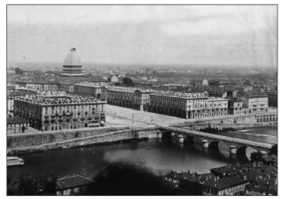
Alpler’in başkenti olarak nitelenen Torino İtalya’nın Detroit’i olarak bilinegeldi. Roma ve Milano’dan
sonra İtalya’nın üçüncü büyük kentiydi. Aynı zamanda İtalya’da sosyolojinin yeşerdiği kent oldu.
İlk evrede kaba çizgileriyle sosyal bilim alanında iki ana yönelim belirdi. Savaşın bilimi siyaset, barışınki ise sosyoloji oldu. 1919’da, Paris’te siyaset, 1921’de, Torino’da sosyoloji tartışılıyordu. İlkinde çatışma, ikincisinde uzlaşma gündemdeydi. Paris’te imzalanan barış antlaşmalarıyla yenik düşen ülkeler savaş suçlusu bulunuyor, üstesinden gelemeyecekleri ağır yükümlülükler altına sokuluyorlardı. Bu ikinci bir savaşa yeşil ışık yakma anlamına geliyordu. Son kertede İkinci Dünya Savaşı’nın tohumları Paris’te atılmıştı. 1921’de Torino’da ise solidarizm hâkimdi. Çağdaş toplumun karşılaştığı yapısal sorunlar ele alınıyor, yeni bir savaş ortamına set çekilmeye çalışılıyordu. Türkiye her iki kentte de boy gösterdi. Osmanlı Paris’e cezalandırılmak üzere celb edilmişti; Torino’ya ise barışın korunması için davet ediliyordu. İşte 1921 Uluslararası Torino Sosyoloji Kongresi uluslararası alanda solidarizmin ilk kez sınandığı bir ortamı oluşturuyordu. Kongre sosyolojiyi geniş bir tabana oturtmuş, ona işlevsel bir boyut kazandırmıştı. Ancak, bu tür bir anlayışın iki dünya savaşı arası uzun soluklu olması beklenemezdi.
René Worms ve Sosyoloji
19. yüzyılda bilimlerin anası antropoloji olmuştu. Biyolojik bulgulardan güç alan antropoloji diğer sosyal ve beşeri bilimler için de zemin hazırlamıştı. Bu arada Auguste Comte ile birlikte sosyoloji ilk adımlarını atıyor, yüzyılın sonlarına doğru sosyal bilimler tasnifinde kalıcı bir yer ediniyordu. Sosyoloji 1894’ten itibaren düzenlenen kongrelerle uluslararası bir konum elde edecekti.360Fransız sosyolog René Worms Paris’te Paris Sosyoloji Derneği’ni [Société de Sociologie de Paris] ve Uluslararası Sosyoloji Enstitüsü’nü [Société Internationale de Sociologie] kurmuş ve 1893’ten itibaren Uluslararası Sosyoloji Dergisi’ni [Revue Internationale de Sociologie] çıkarmaya başlamıştı. Sosyolojiyi pozitif felsefenin bir uzantısı olmaktan çıkararak bağımsız bir bilim olarak yerleşmesine çaba sarf eden René Worms, tıpkı tıpta anatominin gördüğü işleve benzer bir biçimde toplumsal olayların bilimsel şekilde çözümünün sosyoloji ile mümkün olabileceğini savunuyordu.
Worms’un sosyolojisinde tıp metaforu tesadüfi bir öğe değildi. René Worms, Alfred Espinas ve Gustave Le Bon’un uzviyetçi toplum anlayışını 1896’da yayımlanan Organizma ve Toplum [Organisme et Société] adlı eserinde geliştirecekti. Revue Internationale de Sociologie’in bilim camiasında gördüğü revaç René Worms’u bir yıl sonra Institut International de sociologie’yi ve sosyoloji eserlerini içerecek Bibliothèque internationale de sociologie kitap dizisini çıkarmaya sevk etti. Ancak, 20. yüzyılın başlarında Frédéric Le Play ve özellikle Émile Durkheim’in etkin konumları Worms’un sosyolojisini geri plana itti. Özellikle François Simiand’ın Organizma ve Toplum adlı kitabına yaptığı sert eleştirilerin ardından sosyoloji camiası Worms’un uzviyetçi sosyolojisinden yüz çevirmişti. Ama yine de Worms’un düzenlediği uluslararası kongreler o dönem için sosyolojinin dünya çapında bir bilime dönüşmesinde etkin rol oynadı. Uluslararası Sosyoloji Enstitüsü’nün yayımladığı Annales’ler Enstitü’nün faaliyetlerini ayrıntılarıyla ele alıyordu.
René Worms, çabası sayesinde İngiltere’den Rusya’ya, Kuzey Amerika’dan Güney Amerika’ya geniş bir sosyolog kesimini bir araya getirmeyi başarmış ve sosyoloji böylece ortak tabanda buluşma olanağı bulmuştu. Uluslararası Sosyoloji Enstitüsü’nün düzenlediği sosyoloji kongreleri tebliğleri on bir cilt olarak yayımlanmıştı. İlk beş cilt 1894 ve 1902 arasını kapsıyordu. Her cilt 300 ile 600 sayfa arasında, ortalama 411 sayfaydı. İlk on cilt 1894 ile 1904 arası her yıl yayımlandı. Bu nedenle Annales adını taşıyordu. On bir ile on dördüncü ciltler üç yıl arayla çıktı. Nedeni kongrelerin üç yılda bir yapılmasıydı. On iki ve on üçüncü ciltler 1909 Bern Kongresi’nin tebliğlerine yer verdi. 1912’de yayımlanan on dördüncü cilt ise Roma’da toplanan kongreye ayrılmıştı. Uzun bir aradan sonra 1928’de yayımlanan on beşinci cilt 1927’de Paris kongresinin tebliğlerini kapsadı. Bu serinin onuncusu ve sonuncusu Ekim 1930’da, Cenova’da gerçekleştirildi ve tebliğleri 1932’de yayımlandı.
Worms’un kongreleri savaş öncesi düzenli bir biçimde yapılıyordu ve 9. kongre için 1915 yılı öngörülmüştü. Ancak savaş ortamı kongrenin ertelenmesine neden oldu. Savaş sonrası toparlanma uzun süre aldı. 1925’te gerçekleştirilmesi beklenen kongre ise René Worms’un hastalığı ve ölümü nedeniyle ertelendi. Bu arada Cihan Harbi sosyoloji camiasını da büyük ölçüde etkilemişti. Birçok sosyolog savaşta, cephelerde telef olmuş, kimisi salgın hastalıklara kurban gitmişti. Paris, Uluslararası Sosyoloji Enstitüsü’nün ayakta kalıp kalmayacağı bile tartışılır olmuştu. Savaş ertesi birçok ülkenin milliyetçiliğin etkisiyle içine kapanması uluslararası sosyoloji camiasını da olumsuz etkilemişti. René Worms’un Şubat 1926’da ölümü ertesi, onun fikirlerini paylaşan, eski dostu Durkheim’in müritlerinden Gaston Richard, Enstitü’nün başına geçti. İkinci Dünya Savaşı’na kadar Revue internationale de sociologie’nin yayınını sürdürdü.
Kızıl Kent Torino
Cihan Harbi ertesi sosyolojiyi farklı bir eksene oturtan 1921 Uluslararası Sosyoloji Kongresi’nin Torino’da toplanmasının özel bir anlamı vardı. Barış görüşmelerinin yapıldığı Paris bir “burjuva” kentiydi. Torino ise İtalya’nın “kızıl kenti” [red capital] olarak ün salmıştı. Gramsci, kenti İtalya’nın Petrograd’ı diye niteliyordu. Fabrika konseylerinin denetimi altında kentin “Kızıl Muhafızları” vardı. İtalya’da işçi devleti kurmak için her türlü hazırlık bu kentte gerçekleştirilmişti. Bir sanayi kentiydi. Ünlü otomobil fabrikası FIAT orada kuruluydu. Savaş sona erdiğinde Avrupa’nın en fazla traktör üreten şirketi FIAT’tı. 1913 yılında FIAT 4000 işçi istihdam ederken 1918’e gelindiğinde bu sayı 20.000’e çıkmıştı. İtilaf ülkelerinin savaş sırasında zırhlı araç ve uçak ihtiyacının önemli bir kısmını FIAT karşılıyordu. Kentin nüfusu 1911’de, yüzde 20’si sanayi işçisi olmak üzere 400.000 iken, 1918’de, yüzde 30’u sanayi işçisi olmak üzere 500.000’e ulaşmıştı. Bu sayıya kent nüfusunun yüzde 5 ila 10’u arasında bir kesimini oluşturan silah altındaki Torinolular dahil değildi. Torino proletaryasının diğer bir özelliği çalışanların yüzde 40’ının kadın olmasıydı. Kentin kadın işçileri 1912-1920 arası ülkeyi sarsan proleter ayaklanmalarının başını çekmişti.
Öte yandan Torino burjuvazisi, İtalya’nın savaşta tarafsız kalmasından yanaydı. Burjuvazi, ülkenin diğer endüstri kentlerinkinin aksine, savaşa girmeden de savaş ekonomisinden nemalanıyordu. 1914-15 yıllarında gerçekleşen ekonomik gelişme olağandışıydı. İtalya’da savaş yanlısı sektörler demir, çelik ve gemi yapımıydı. Savaşa kadar Torino endüstrisinin emek yoğun kesimi pamuklu ve yünlü dokumaydı. İtilaf devletlerinden gelen talep sayesinde kısa sürede otomotiv sektörü bunların önüne geçti. Siparişlerin yoğunluğu nedeniyle Torino burjuvazisi savaşa müdahale etme gereği duymuyordu. Emek kesimi açısından ise kentte işsiz kalmamıştı. Ne kadar göçmen ve kentte yaşayan kadın varsa tezgâh başındaydı. Hatta Torino’da emek açığı vardı ve bu nedenle fabrika sahipleri Taylorism’le verimliliği artırarak açığı giderme çabası içersindeydiler.
Kısaca Torino proletaryası İtalya’nın en ileri ve mücadeleci kesimiydi. Nitekim kısa bir süre sonra İtalyan faşizminin hedefi Torino olacaktı ve faşizmin acımasızlığı tarihe 1922 Torino Katliamı diye geçecekti. Faşistler işçi sendikalarının merkezlerini basıp yakmış, İtalyan Sosyalist Partisi’nin iki kulübüne saldırmışlardı. İtalyan Komünist Partisi’nin gazetesinin editörleri faşistlerce rehin alınmıştı. Faşistler kentte terör estiriyor, komünist militanları ve sendikacıları tutsak alarak kimilerini insanlık dışı yöntemlerle katlediyorlardı. Bunlardan biri kamyon arkasına bağlanmış, ölünceye kadar kent içinde sürüklenerek dolaştırılmıştı. Bir diğeri sopalarla ölünceye kadar dövülmüştü. Olaylar sırasında faşistler tarafından on bir kişi öldürülmüş ve on kişi ciddi şekilde yaralanmıştı. Gramsci’nin Hapishane Notları bu gelişmeleri ayrıntılı bir biçimde ele alıyordu.
1921 Uluslararası Sosyoloji Kongresi işte böyle bir kentte toplanmıştı. Sosyoloji ve Torino’daki hâkim konumuyla solidarizm, özü itibariyle Marksizme karşıydı. Solidarizm olsa olsa reformist bir çizgiye oturuyordu. Ama yine de Paris’teki gelişmeler karşısında Torino Sosyoloji Kongresi insanlık için önemli bir adımdı.
Dayanışma Anlayışı ve Türkiye
1921 Torino Uluslararası Sosyoloji Kongresi, Paris Uluslararası Sosyoloji Enstitüsü’nün düzenlediklerinden farklı bir çizgiyi ifade ediyordu. Milletler Cemiyeti ile birlikte yeni bir anlayış doğmuştu. Torino Kongresi büyük ölçüde Léon Bourgeois’nın görüşleri doğrultusuna şekillenmişti. Léon Bourgeois Milletler Cemiyeti’nin kuruluşunda önemli bir rol oynamış, Milletler Cemiyeti Konseyi başkanlığına getirilmişti. Nitekim bu gayretleri sonucu 1920 yılında Nobel Barış Ödülü’nü alacaktı. 1921 Torino Kongresi’nde de ön plandaydı. Kongrenin fahri başkanlığını üstlenmişti. Yukarıda belirtildiği gibi dayanışmacılık ya da Fransızca terimiyle “solidarité” üzerine görüşleri akademik camiaya Émile Durkheim aracılığıyla yansıtılmıştı.
Torino Kongresi İtalyanların öncülüğünde gerçekleştirilmişti. 1894’ten beri toplanan sosyoloji kongrelerinden özde büyük ölçüde farklı bir anlayışı ifade ediyordu. Torino’da toplanan sosyal ve beşeri bilimlerin her alanından bilim insanlarını bir araya getiren kongre daha uygulamaya yönelik, “politik” kaygılar taşıyordu. Bu yapılanma Léon Bourgeois’nın politik şahsiyetiyle de uyumluydu. Savaş nedeniyle yeryüzünde belirgin bir biçimde öncelik kazanan temel sorunlar Torino’da sosyoloji adı altında masaya yatırılıyordu. Tıpkı İttihatçıların solidarizmle, sosyolojizmle topluma çekidüzen verme çabaları gibi İtalyanlar da sosyolojiyle, yeni dünyayı biçimleme umudu içindeydiler.
İttihatçıların ulus inşa sürecinde temel dayanak noktaları Léon Bourgeois’nın solidarizmi olmuştu. Ziya Gökalp öncülüğünde solidarizm ulus-devletin inşasında başvurulacak temel kaynaktı. Osmanlı’da bu tür bir işlev üstlenirken Cihan Harbi ile birlikte solidarizm çatışmacı bir dünya anlayışına da panzehir görevi görecekti. “Tesanüd”, “dayanışma”, “solidarite” hangi adla tanımlanırsa tanımlansın solidarizmin temel normları artık Kıta Avrupası’nı fethetmişti. Savaş öncesi bir “teori” olan sosyoloji şimdi ayağı yere basan, pratik çözümlere yönelik bir bilim alanı olarak algılanıyordu. Bundan böyle toplumun her türlü güncel sorunu sosyolojinin kapsam alanına giriyordu.
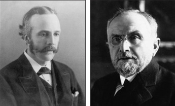
Kongre’nin fahri başkanları Léon Bourgeois ve Arthur James Balfour’du. Léon Bourgeois
Cihan Harbi ertesi Milletler Cemiyeti Konseyi başkanlığını üstlendi ve 1920’de
Nobel Barış Ödülü’ne layık görüldü.
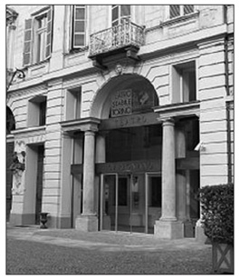
Carignano Tiyatrosu 1752-53 yıllarında ilk yapıldığında at nalı şeklindeydi. Benedetto
Alfieri tarafından inşa edilmişti. İtalyan birliğinin sağlandığı Risorgimento yıllarında
Vittorio Alfieri ve Carlo Goldoni’nin izinde yeni İtalyan tiyatrosu bu mekânda sahnelendi.
Torino Kongresi’nin ana teması olan “dayanışma” yani “solidarite” artık geniş anlamda demokrasiyi simgeliyordu. Gökalp yanılmamıştı; Émile Durkheim’den esinlenerek “ictimaî tesanüdcülük”te karar kılmış, ülkeyi düzlüğe çıkarmanın tek yolu olarak solidarizmi görmüştü. Solidarist toplum anlayışı ya da felsefe Türkiye’de de, çokpartili döneme kadar toplumsal yapının kurgulanışında temel işlev görecekti. Kemalist ideoloji diye kimi çevrelerde burun kıvrılan düşünce sisteminin özünde solidarizm vardı ve kendine özgü bir demokrasi anlayışını beraberinde getiriyordu. Bu şüphesiz liberal düşünceden kaynaklanan “siyasi demokrasi” değildi; ama Fransız Devrimi’nin eşitlikçi anlayışının ürünüydü ve Rousseau esintili “halkın egemenliği”ni gündeme getiren bir anlayıştı.361Ulus-devletin yoktan var edilişi evresinde Gökalp’in “fert yok cemiyet var”, “hak yok vazife var”, “sınıf yok esnaf var” özdeyişleri solidarizmin özünü oluşturuyordu. Bu süreci İsmail Hüsrev Tökin, 1946’da yazdığı Cumhuriyet Halk Partisi’nin Cemiyet Görüşü başlıklı kitapçığında açık bir biçimde ortaya koyuyordu.
Durkheim sosyolojisinin determinist yapısı kuşkusuz savaş sonrası sorgulanır olmuştu. Volontarist bir açılımı olan Bergsonizmin savaş sonrası güç kazanmasında bu sorgulamanın önemli bir payı vardı. Durkheim, Mustafa Şekip Tunç’un psikolojiyi vurguladığı ve antropolojinin kuşatacağı 30’lu yıllara kadar Türkiye’de tahtından indirilemeyecekti. 20’li yıllar Durkheim’in on yılıydı. Okullarda Durkheim sosyolojisi okutuluyordu. 30’lu yıllarda gündeme gelen “kültür devrimi” sonucu ortaokullarda Vatandaşlık Bilgisi, liselerde ise Sosyoloji farklı bir içerikle, siyaset sosyolojisine dönüşmüş şekliyle okutulmaya devam edilecekti.
Cihan Harbi ertesi Milletler Cemiyeti’nin uluslarüstü bir örgüt olarak tüm dünyaya çekidüzen vermesi bekleniyordu. Çalışan kesim, kadının konumu, göçmenlerin sorunları, savaşın yetim bıraktığı çocuklar, dullar, savaş gazileri devlete yeni görevler yüklüyordu. Artık, 19. yüzyıl liberalizminin pasif devleti yerine toplum sorunlarına sahip çıkacak aktif bir devlet gündemdeydi. Bu bir anlamda “sosyal devlet”e atılan adımdı. Her ne kadar “refah devleti”ne yönelik ilk girişimler 19. yüzyılın son çeyreğinde görülmüşse de Cihan Harbi’nin neden olduğu derin yaralar, bu tür bir anlayışın ivedi bir biçimde hâkim konum kazanmasını gerektirmişti. İşte sosyolojinin yeni alanı “sosyal devlet”in inşasıydı. Uluslararası Torino Sosyoloji Kongresi bu amaca yönelik yeni hedefleri belirliyordu.
Konferansın Temel Sorunları
Kongre yirmi iki devlete mensup yüz elli kadar delegenin iştirakiyle 9 Ekim 1921 Pazar günü Torino’da ünlü Carignano Tiyatrosu’nda açılmıştı. Kongrenin “fahrî reis”leri İngiltere’nin eski başbakanlarından Arthur James Balfour, Fransa’nın eski başbakanlarından Léon Bourgeois ve İtalyan bakanlardan Losatti, “fahrî reis-i umumî” ise İtalya Senatosu’ndan Paulo Bozelli idi. Türkiye, İtalya, İngiltere, Fransa, ABD, Almanya, Japonya, Çekoslovakya, Yugoslavya, Hollanda, Lehistan, İspanya, Portekiz, Macaristan, Rusya, Gürcistan, Siyam, Şili, Kolombiya, Yunanistan ve Ermenistan kongrede yer alan ülkelerdi. Her delegenin boynunda kongre için hazırlanmış altın madalya yer alıyordu. Kongreyi İtalya Senatosu üyesi, savaş sırasında hükümeti yönetmiş olan eski başbakanlardan Paolo Boselli açıyor, onu Torino Politeknik’inde hukuk profesörlüğü yapmış, o sırada Torino Belediye Reisi olan Riccardo Cattaneo’nun konuşması izliyordu. Ardından hükümet adına Marki Sanarandaccio, kongreyi düzenleyen heyet adına Torino Sosyoloji Enstitüsü Başkanı Profesör Francesco Cossentini, Milletler Cemiyeti adına Profesör Oskar Duhalki kürsüye çıktılar. Son olarak dış ülkelerden gelen temsilcilere söz verildi. Sırasıyla Almanya, Fransa, Çekoslovakya, Yugoslavya, Türkiye ve Ermenistan delegeleri söz aldılar. Sırası geldiğinde Enstitü başkanı Cossentini “Haritada küçülen, fakat kalplerde büyüyen bir milletin evladı” sözleriyle Türkiye temsilcisi Muslihiddin Âdil’i kürsüye davet edecekti.
O sırada Sevr hükümleri sonucu ülke işgale uğramış, Türkiye Orta Anadolu’ya sıkışmış küçük bir devlet görünümündeydi. Muslihiddin Âdil, konuşmasında Cihan Harbi’nin neden olduğu devasa fedakârlıkları tazmin ve telafi etmenin, sürekli bir barışın kurulmasını sağlamanın bütün milletlerin ortak dileği olduğunu ve bu amaca ulaşmak için yalnız uluslararası hukukta yeni düzenlemelere gitmenin yeterli olmayacağını, değişik ülkelere mensup bilim insanlarının ve siyasetçilerin daha samimi bir dayanışma göstererek çalışmaları gerektiğini vurguluyor, ülkelerde aydınların, arif insanların kamuoyu üzerindeki etkilerini izah ederek uluslararası dayanışma fikrinin geliştirilmesi gerektiğini söylüyordu. Konuşmasını bitirirken kongre hazırlık komitesine ve İtalyan milletine, Türklerin ve Darülfünun’un gönülden teşekkürlerini bildiriyordu.362
Uluslararası Torino Sosyoloji Konferansı’nın gündemi, iki dünya savaşı arasındaki temel toplumsal sorunlara ışık tutacaktı. Ancak Torino idealist insanların bir araya geldiği bir ortamdı. Toplantıda gündeme getirilen doğru teşhisler kısa sürede sönüp gidecek, Avrupa Mussolini ve Hitler’le birlikte karanlığa gömülecekti. Ülkeler kendi içlerine kapanacak, dünyanın karşılaştığı ortak sorunlar unutulacaktı. Bu nedende Torino Konferansı günümüz literatüründe de belleklerde yok olup gitti. Sosyoloji tarihinde tek satır bile işgal etmez oldu. Oysa Torino Konferansı’nın gündemi çağdaş dünyanın sorunlarını kapsıyor, barışa giden yolu belirliyordu.
Torino ve Barış Anlayışı
Yukarıda belirtildiği gibi Torino Konferansı uluslararası alanda “tesanüd”ü, dayanışmayı amaçlayan, ülkeleri barışçı bir anlayışla Milletler Cemiyeti çatısı altında bir araya getirmeye çalışan bir barış konferansıydı. Bu amaçla İstanbul’da Cemiyet-i Akvam Muhibleri bir dernek bile kurmuş ve Prag’daki Müzaheret Cemiyetleri Konferansı’na katılarak bu çatı altında yer almayı başarmıştı. Ancak, aynı yıllarda Ankara, Milli Mücadele’yi yürütüyordu.
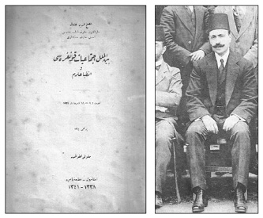
Muslihiddin Âdil, Uluslararası Torino Sosyoloji Kongresi’ne Türkiye’den katıldı ve ülkesine
döndüğünde Beynelmilel İctimaiyyat Kongresi ve İntibalarım adlı eseri yazdı.
Gündemi Torino sosyoloji konferansındakinden farklıydı. Ankara’da sosyoloji “siyasi” idi, Siyaset sosyolojisi baş köşeyi işgal ediyordu. 19. yüzyıldan, Auguste Comte’tan değil, 18. yüzyıldan, Aydınlanma’dan, Rousseau’dan esinleniyordu. Bunun adı “vahdet-i kuva” ya da kuvvetler birliği idi. “Birey”den “halk”a yöneliniyor, “halkın iradesi”nin bağlayıcılığı gündeme getiriliyordu. Ankara her şeyden önce kendi ülkesinde “tesanüd”ü sağlamaya çalışıyordu. “Yurtta sulh, cihanda sulh” öncelikle yurdun bağımsızlığını gözetiyordu.
Torino Konferansı’nın gündemini oluşturan ve konferans sırasında yayımlanan bir tanıtım kitabı dışında Torino belleklerden silindi. 20’li ve 30’lu yılları varsa yoksa Paris Konferansı gündemi işgal etti. İlginçtir, bu tür bir vahada Torino Konferansı üzerine en kapsamlı kitap Türkçe yayımlanacaktı. Batı kaynaklarında bulunamayan bilgiler bir kitapta yer alıyordu. Bu kitap, Darülfünun’un kongreye gönderdiği, Hukuk-ı İdare müderrisi eski Maarif Müsteşarı Muslihiddin Âdil’in Beynelmilel İctimaiyyat Kongresi ve İntibalarım adlı eseriydi.363Muslihiddin Âdil Selanik Hukuk Mektebi müdürlüğü yapmıştı. Mukayeseli Hukuk-ı İdare Dersleri; İktisad Dersleri; Malumât-ı Hukukiyye; Malumât-ı İktisadiyye; Malumât-ı Ahlakiyye ve Medeniyye; Alman Hayat-ı İrfanı Cumhuriyet öncesi yayımlanmış belli başlı kitaplarıydı. Cumhuriyet’le birlikte yurt bilgisi, “Malumât-ı Vataniyye” kitapları yazmıştı.364
Sosyoloji her ne kadar Fransa’da doğmuşsa da onu yakından izleyen, ona akademik ortam hazırlayan bir diğer ülke İtalya idi. İtalyan sosyologlar ulusal düzeyde ilk kongrelerini Milano’da 1896’da gerçekleştirmişlerdi. Benzer kongreler 1899, 1902 ve 1908’de art arda sırasıyla Cenova, Palermo ve Napoli’de düzenlenmiş ve bu kongrelerin tutanakları La Scienza Sociale’de yayımlanmıştı. Torino Uluslararası Sosyoloji Enstitüsü böyle bir geçmişten geliyordu. Benzer enstitüler Cenova, Palermo, Katania ve Moderna’da da faaliyete geçirilmişti. Torino Enstitüsü Cihan Harbi’nin toplumsal yaşamda açtığı yaraları görmüş, dayanışmanın gereğini duymuş ve kendisine çalışma alanı olarak savaş sonrası siyasal, ekonomik ve toplumsal sorunların üstesinden gelecek ortak bir platform oluşturmayı seçmişti. Amacı planlı bir biçimde “uluslararası dayanışma”ya arka çıkmaktı. İşte bu amaca yönelik olarak ilk kongre 1921’de Torino’da gerçekleştirilmişti. İzleyen kongreler 1922’de Viyana’da, 1923’te Roma’da yapıldı.365Kongreler makro düzeyde sosyal sorunlara eğiliyor, uluslararası hukukun bu alanda yol alması için çaba sarf ediyordu. Bu nedenle Milletler Cemiyeti’nin reformlarıyla yakın bağı vardı. Halkların ve devletlerin hak ve görevlerini gündemine alıyordu. Uluslararası özel hukukun kodifikasyonu için çaba sarf ediyor, azınlıklar sorununa düzen getirmeyi hedefliyor, toplumun marjinal kesimlerine, işçilere ve kadınlara arka çıkıyordu.
Cumhuriyet Türkiyesi’nin kuruluş evresindeki bu üç kongreden ilkine Türkiye de katıldı. Ancak, Milli Mücadele’nin sıcak günlerinde Darülfünun diğer kongrelere katılma olanağı bulamadı. Torino’dan gelen çağrı Türkiye’nin bir delegasyonla kongreye katılması doğrultusundaydı. Nitekim Darülfünun bu daveti “ehemmiyet-i mahsusa” ile karşılamış ve Hukuk Medresesi [Fakültesi] Müderrisîn Meclisi [profesörler kurulu] Torino’ya üç kişiyi gönderme kararı almıştı. Bu şahsiyetler İdare Hukuku Müderrisi Muslihiddin Âdil, “İlm-i malî” Müderrisi Hasan Tahsin ve İktisat Müderrisi Mustafa Zühdü beylerdi. Ancak Meclis-i Vükela ya da Osmanlı hükümeti mali gerekçelerle Darülfünun’a bu üç kişiden yalnız Muslihiddin Âdil’in giderlerini karşılayabileceğini bildirmişti. Torino Kongresi Cihan Harbi ertesi bilimsel nitelikteki uluslararası kongrelerin altıncısıydı. Osmanlı Darülfünunu ilk kez Torino’ya davet edilmişti.
Kongrede Encümenler
Muslihiddin Âdil’in kitabının içindekiler kısmına bakmak bile savaş sonrası sosyolojinin ana sorunları hakkında bilgi edinmeye yetiyordu. Kitapta yer alan başlıklar şunlardı: “Kongrenin küşadı; Kongrenin programı; Cemiyet-i Akvam ahidnamesinde icrası muktezi tadilat; Ekalliyetlerin himayesi; Müstemlekât mandasının tanzimi; Beynelmilel hukuk-ı hususiyyenin tensiki; Bolşevizm meselesi; Ticaret-i beynelmilel ve siyaset-i rüsumiyye; Kambiyo meselesi; Tahrib olunan yerlerin imarı ve beynelmilel tesanüd; Yeni teşkilat-ı askeriyye ve millet meselesi; Harp malulleri ve şüheda eytâmı; Mesaiye müteallik mesail; İctimai sigortalar; Muhaceret meselesi; İktisadi-ictimai meselenin hallinde kadın; Beynelmilel harsî münasebât; Harbin tevlid veya tezyid ettiği emrâza karşı mücadele; Müzakerâtın hitamı.”
Görülebileceği gibi, siyasetten hukuka, iktisattan kültüre, hatta sağlık sorunlarına geniş bir yelpaze kongrenin kapsam alanına girmişti. Bu denli geniş bir kongrenin gerekçesini Muslihiddin Âdil kitabın “Mukaddime”sinde açıklıyordu: Cihan Harbi yeryüzünde toplum düzenini, “ictimaî akideleri” sarsmıştı. Artık “eski dünya” değişmişti. Bu salt birçok kentin yerle bir olması, ülke hudutlarının değişmesi olarak görülmemeliydi. Değişimin gerisinde topluma hâkim olan toplumsal ve ahlaki düsturların eski kudret ve nüfuzunu kaybetmesi yatıyordu. Dört yıllık savaş ve tahribattan sonra varılan nokta o denli belirsizdi ki, insanlık kesif bir sis perdesiyle karşı karşıyaydı. Savaş sonrasını öngörmek hemen hemen olanaksızdı. Muslihiddin Âdil, “İstikbal, zekâ-i beşerin, henüz okumasını bilmediği bir kitapta yazılıdır” diyordu. Tüm dünya bir “ictimaî buhran”la karşı karşıyaydı. Bütün cihanın bilge kişileri, arif insanları, top seslerinin sustuğu günden beri bu buhranın önüne geçebilmek, savaşın nedenlerini araştırmak, geleceği öngörmek istiyorlardı. Gelecek nesil yeni bir “harb-i umumî”den ancak bilim insanlarının çabalarıyla kurtulabilirdi.
Muslihiddin Âdil, kitabında geçmişte barış için gösterilen çabalara da yer veriyordu: Tarih, bizlere genel savaşların ardından barışın tesisi için kongreler toplandığını gösteriyordu. Nitekim Napoléon’a karşı beraber savaşan Avrupa ülkeleri onu yenilgiye uğratıp iktidardan düşürdükten sonra Viyana’da bir araya gelmişlerdi. Ancak bu siyasi kongre, öncekiler gibi, uluslararası ihtilafların gerçek nedenlerini görememiş ve çözüm yollarını bulamamıştı. Doksan hükümdar ile otuz beş başbakanın bir araya geldiği bu kongrede Avrupa’nın geleceğini belirleyen kararlar, yarım yüzyıl bile geçmeden 1848 ihtilalleriyle tarumar olmuştu.
Torino’da kongre dili olarak Fransızca, İngilizce, İtalyanca ve Almanca belirlenmiş, ancak Fransızca dışında verilen “muhtıra ve takrirler”in birer Fransızca özeti sunulmuştu. Kongrede ele alınacak konular beş başlığa ayrılmış ve her biri için bir komisyon kurulmuştu. Ardından komisyonların çalışmaları genel kurulda tartışılmıştı. Muslihiddin Âdil, bu beş komisyondan ancak birinci, ikinci ve beşinci komisyonların görüşmelerine katılabilmişti. 9-16 Ekim arası toplanan kongrenin ilk dört günü komisyon düzeyinde, son dört günü ise genel kurul olarak bir araya gelinmişti. Beş komisyonun, o günkü dille encümenin, kapsadığı konular şunlardı:
Birinci komisyon, Milletler Cemiyeti Sözleşmesi’nin uygulanmasına yönelik değişiklikler; azınlıkların himayesi; müstemlekelerde manda rejiminin düzenlenmesi; uluslararası özel hukuk çalışmaları ve nihayet Bolşevizm sorunuyla ilgilenecekti. Uluslararası ticaretin düzenlenmesi ve gümrük siyaseti; kambiyo sorunu; tahrip olunan yerlerin yeniden inşa ve kalkındırılması için uluslararası dayanışma ikinci komisyonun alanıydı.
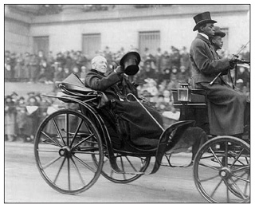
Woodrow Wilson’un On Dört Noktası her ulusun kendi kaderini çizmesini öngörmüştü.
Ama bu topraklarda yaşayan azınlıklar gözden kaçmıştı. Bunun sonucu
birçok ülkede etno-milliyetçilikler doğdu.
Yeni askeri örgütlenme ve silahlanma sorunu; savaş malulleri ve şehit yetimleri hakkında önlemler üçüncü komisyonun görev alanına giriyordu. Çalışma hayatına ait sorunlar; iş kanunları ve sermaye ile emek arasındaki ilişkilerin düzenlenmesi; çalışma yaşamı hakkında bilimsel incelemeler; iş sözleşmelerinde yeni düzenlemeler dördüncü komisyona; savaş ertesi ekonomik-toplumsal sorunların çözümünde kadının yeri; uluslararası kültürel ilişkiler; savaşın doğurduğu ya da artırdığı hastalıklarla mücadele ise beşinci komisyona düşmüştü.
Muslihiddin Âdil, bu beş komisyonda ele alınan sorunları kitabında ayrıntılarıyla aktarıyor ve en sonunda “İntibalarım”da genel bir değerlendirmeye gidiyordu. Muslihiddin Âdil kitapta kendine göre on altı başlık altında bir tasnif yapmıştı. Bu başlıklar şunlardı: 1) Cemiyet-i Akvam ahidnamesinde icrası muktezi tadilat; 2) Ekalliyetlerin himayesi; 3) Müstemlekât mandasını tanzim; 4) Beynelmilel hukuk-ı hususiyyenin tensiki; 5) Bolşevizm meselesi; 6) Ticaret-i beynelmilel ve siyaset-i rüsumiyye; 7) Kambiyo meselesi; 8) Tahrib olunan yerlerin imarı ve beynelmilel tesanüd; 9) Yeni teşkilat-ı askeriyye ve millet-i müsellâha; 10) Harb malulleri ve şüheda eytâmı; 11) Mesaiye müteallik mesâil; 12) İçtimaî sigortalar; 13) Muhaceret meselesi; 14) İktisadî-ictimaî mesailin hallinde kadın; 15) Beynelmilel harsî münasebet; 16) Harbin tevlid veya tezyid ettiği emraza karşı mücadele. Savaş sonrası yeni bir yüzyıla girerken sosyoloji bundan böyle bu denli kapsamlı bir içeriğe sahip olacaktı. Bir diğer deyişle bu anlayış sosyolojizmin ta kendisiydi.
Milletler Cemiyeti “Tadilat”ı
Savaş sonrası Woodrow Wilson’ın da ilhamıyla sürekli bir barışın ihdası için öngörülmüş olan uluslarüstü bir organ Osmanlı’daki adıyla “Cemiyet-i Akvam” yani Milletler Cemiyeti idi. Ancak Torino Uluslararası Sosyoloji Kongresi, Milletler Cemiyeti’nin yapısını yetersiz buluyordu. Daha Milletler Cemiyeti’ni kuran sözleşmenin mürekkebi kurumadan “tadil” edilmesi gerektiği sonucuna varmıştı. Bu nedenle kongre gündeminin ilk maddesi Milletler Cemiyeti’nde “tadilat”tı. Muslihiddin Âdil’in yorumuyla, Cihan Harbi’nin neden olduğu sefalet ve kötülüklerin sonucu her bireyin kalbinde derin bir “hiss-i gayz”, bir öfke ve nefret doğmuştu. Bu kin ve intikam duygusu dört bir yanı sarmış, beklenmedik bir zamanda, belki umulmadık bir mekânda yeni bir savaş olasılığı doğmuştu. Bu “harik-i hâil”in, korkunç yangının dehşeti bütün aydınları derinden düşündürmekteydi. Torino Uluslararası Sosyoloji Kongresi işte bu tehdidi gidermeye yönelik bir toplantıydı.
Ancak, ne pahasına olursa olsun barış o günler için fazla lükstü. Muslihiddin Âdil’e göre, savaş kimi durumlarda zorunluydu. Bir ulusun birlik ve bütünlüğünü sağlayan, yurtsever duyguları güçlendiren, uluslararası uzlaşmazlıklara en seri ve kati surette çözüm bulan kimi zaman savaştı. Savaşın patlak verdiği noktada milletin fertleri arasındaki çatışma unutulur ya da bir kenara bırakılır, düşmana galebe çalmak ortak bir hedef oluştururdu. Muslihiddin Âdil, savaşı bir düelloya benzetiyordu. “Denilebilir ki düello nasıl mesele-i namusu halletmek için bütün eşkâl-ı hukukiyye ve adliyyeden daha müessir bir vasıta ise, harb de öyledir” diyordu. Bu nedenle, savaşı yalnız tabii bir olay olarak değil, yararlı ve zorunlu bir hadise olarak görmek gerekirdi. Hatta savaşı “ictimaî bir hayır”, faydalı bir toplumsal olay olarak kabul edenler nadir değildi. Fakat, savaşın nedenleri ne kadar derin olursa olsun, insanlığın evrimi “mücadele”yle değil, “tesanüd”le, yani dayanışmayla mümkündü. Konferansın şiarı solidarizm bunu gerektiriyordu. Eğer uluslararası dayanışma fikri, cihan kamuoyunda kabul görür ve bu teminat ve yaptırım altına alınırsa, uygar milletler arasında toplumsal ve ahlaki “vahdet” doğar, sürekli bir barışın gerçekleştirilmesi mümkün olurdu.
Yeni bir savaşın patlak vermesini önleyecek yegâne çare, ferdin kalbinde yatan hırs ve intikam ateşinin söndürülmesinde etkin olabilecek evrensel bir örgütün oluşturulmasıydı. İşte bütün elem ve matemlerine rağmen, Cihan Harbi mesut bir sonuç ortaya koymuştu: Uluslararası hukuka riayet fikri gittikçe güçlenerek hukuku ihlal edenleri adalet önüne çıkaracak güce sahip bir yapılanmayı doğurmuştu. Top sesleri arasında yükselen bu “hakk-ı fazilet” sesi, Woodrow Wilson’ın on dört noktada belirlediği uyarıcı seslenişiydi.
Milletler Cemiyeti fikri yeni sayılmazdı. Tarih, yüzyıllardan beri birçok yöneticinin, siyasi kimliğin bu amaç etrafında kimi zaman nazari, kimi zaman ameli bir surette çalıştıklarını gösteriyordu. Muslihiddin Âdil, Hugo Grotius, Hippolyte Taine, Abbé de Saint-Pierre, Jean-Jacques Rousseau, Jeremy Bentham, Immanuel Kant gibi isimleri sayıyor, ardından IV. Henry’yi, I. Napoléon’u, silahsızlanmadan yana olan Rus İmparatoru I. Aleksandr’ı ve nihayet III. Napoléon’u bu tür bir birliği oluşturma çabası gütmüş hükümdarlar olarak görüyordu. Fakat hiçbirinin çabası somut sonuç vermemişti. En nihayet barışa doğru önemli bir adım 1899’da, nazırı Mouravieff’in ilhamıyla, Çar II. Nikola’nın “terk-i teslihât” ya da silahsızlanma davetiydi. Böylece Lahey’de birinci barış kongresi gerçekleştirilecekti. Ardından Theodore Roosevelt’in girişimiyle 1907’de Lahey’de ikinci bir barış konferansı toplanmıştı. Ancak, her iki konferans da barışı teminat altına alamamıştı. 1911’de Trablusgarp, 1912’de Balkan harpleri ve nihayet 1914’te Cihan Harbi insanlığın barıştan ne denli uzak olduğunu kanıtlamıştı.
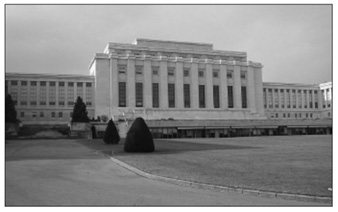
Milletler Cemiyeti’nin merkezi Cenevre’de Palais des nations’du. 20. yüzyılın özgün mimari
eserlerinden biri olan bina bugün Birleşmiş Milletler’in Cenevre ofisi olarak kullanılıyor.
Torino Konferansı katılımcıları önceki barış tasavvurları gibi, savaş sonrası kurulan Milletler Cemiyeti’ni de yetersiz buluyorlardı. Gerçekten etkin bir kuruluş olabilmesi için cemiyeti teşkil edecek her ülkenin siyasi yapısı, “teşkilat-ı dahiliyyesi” belirli ilkeler dahilinde oluşturulmalıydı. Bu ilkeler bir anlamda çağdaşlığın göstergesiydi ve dört başlık altında toplanıyordu. İlk ilke demokrasiydi. Bir ülkenin, dış ilişkilerinde adalet esaslarına riayet edebilmesi için öncelikle kendi evine çekidüzen vermesi ve içerde demokrasiyi benimsemesi gerekiyordu. Her ülke, anayasasını halk egemenliği esasına göre tanzim etmeli ve bu egemenlik şekli değil, fiili olmalıydı. İçişlerinde hakkı ve adaleti sağlayamayan bir millet, dışişlerinde de barışçı, “müsâlemetperverâne” bir siyaset izleyemezdi. Wilson, bu esası ilke edinmiş her devletin içişlerinde demokrasi esaslarını kabul etmesi, barış için en büyük güvenceyi, eski terimle “zamân”ı oluştururdu. 22 Aralık 1917 tarihli bildirisinde Wilson “Hükümetler, bütün iktidarı, idare ettikleri milletin sinesinden almadıkça, hiçbir sulh teessüs ve devam edemez” diyordu.
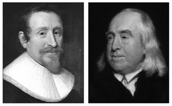
Milletler Cemiyeti fikri yeni sayılmazdı. Muslihiddin Âdil geçmişte bu tür bir üst kuruluşu
savunanlar arasında Hugo Grotius ve Jeremy Bentham’ı sayıyordu. Tek sonuç veren
girişim Lahey barış konferanslarıydı.
İkinci ilke egemenlikti. Evrensel barış için ikinci koşul, milletlerin kendi kaderlerini belirlemeleriydi. Uluslararası hukuka göre, hiçbir devlet, diğer bir devleti kendi siyasetini izlemeye zorlayamazdı. Her millet, geleceğini tayinde tamamıyla serbest olmalıydı. Gelişimi için izleyeceği yolu bizzat belirlemeli, seçmeli ve uluslararası alanda hiçbir sınırlamaya ya da baskıya maruz kalmamalıydı. Yalnızca bu koşullarda küçük milletler, büyük milletlerin yanı başında eşit koşullarda varlıklarını sürdürebilirlerdi. Ancak, bu hususta kongrede bir parantez açılıyor ve “manda” anlayışına zemin hazırlayan bir söylem geliştiriliyordu. Siyasi hayatta, yönetim konusunda yeteneksizliği nedeniyle bir milletin, diğer bir devlet tarafından yönetilmeye mahkûm olması bir tarihi olguydu. Hukuk üstatlarından İtalyan Vico şöyle diyordu: “Kendi kendini idare etmeyi bilmeyen bir millet, diğerleri tarafından idare edilmeye muhtaçtır. Cihan, daima daha âli fıtrattan [yaratılış, mizaç] olanlar tarafından idare edilecektir.”
Muslihiddin Âdil, bu konuda bir ikilem içindeydi. Bu düsturda bir hakikat payı görüyor, tarihte bu konuda birçok örneğin olduğunu kaydediyordu. Ancak, şunun da unutulmaması gerektiğini vurguluyordu: Artık kendi kendini idare edemeyen milletler nadir, hatta enderdi. Demokrasinin gelişimi sonucu her tarafta iş başına yetenekli kişiler geçebiliyordu. Hatta sömürgelerin çoğu artık kendilerini yönetme yeteneğini göstermeye başlamışlardı. Üçüncü ilke “milliyet umdesi” idi. Her millet bir devlet teşkil etmeliydi. Milletler Cemiyeti bütün milletleri sultası altında bulunduracak bir uluslarüstü, “cemiyet-i âliyye” demek değildi. Milletler Cemiyeti’nin amacı hür ve bağımsız milletler arasında bir birlik oluşturmak ve uluslararası ilişkilerin hukuk kaidelerini belirlemekti. Yani Milletler Cemiyeti bir “devlet-i akvam” değil, bir “ittihad-ı akvam” olmalıydı. Milletler Cemiyeti, bir İsviçre ya da Amerika Birleşik Devletleri benzeri bir yapıda tasavvur edilmemeliydi. Çünkü her iki devlet de ortak çıkarların ve tarihin etkisiyle oluşmuş federatif yapılardı. Oysa yeryüzündeki bütün “akvam” arasında bu tür ortak noktaların bulunması olanaksızdı.
Öte yandan “milliyet umdesi” mutlak olarak kabul edilemezdi. Zira, asırlardan beri bir arada yaşayan bazı “ırk”lar vardı ki, bunlar bütün içinde azınlığı oluştururlardı ve bağımsız bir devlet addedilemezlerdi. Bu azınlıklar için “ırkî, lisanî ve harsî” özerklik talep edilebilirdi. Dördüncü ilke “müsavat” yani eşitlikti. Gerçek bir Milletler Cemiyeti’nin, her milletin aynı hukuk ve görevleri haiz olmasını, milletler arasında tam bir eşitliğin ihdas edilmesini kabul etmesi gerekiyordu. Milletler Cemiyeti, nüfus, toprak genişliği, mali ve askeri güç bakımından büyük devletlere daha ayrıcalıklı bir mevki, daha fazla hukuk bahşedecek olursa, güçlünün hakkı, zayıfın hakkından önce gelecek olursa barış hayal olurdu. Torino Konferansı’nda benimsenen, Milletler Cemiyeti’nin gerçek anlamda işlerlik kazanabilmesi için sahip olması gereken ilkeler bunlardı ve bu doğrultuda Milletler Cemiyeti sözleşmesi tadil edilmeliydi.366
Torino Kongresi öte yandan yeni bir savaşın zeminini hazırlayan “Versailles Ahidnamesi”ni de sert bir biçimde eleştiriyordu. Söz konusu antlaşma bağımsız ülkelerin hukuken eşitliği ilkesini ihlal ediyor ve savaşta galip gelmiş ülkelere “rüçhan” bahşediyordu. Daha da ötesi, savaşa başvurmayı meşru kılıyordu. Yeryüzüne barış getirmek için, hukuken eşit bilcümle ülke arasında kardeşlik hukukunu geliştirmek ve bu uğurda uluslararası bir “misak” sağlamak gerekiyordu. Kardeşlik anlayışının manevi nüfuzu, dünya kamuoyu önünde o denli bariz olmalıydı ki, her milletin yürütme organı uluslararası hukuku bihakkın savunabilecek uluslararası bir askeri gücün oluşturulmasına cevaz verebilmeliydi. İşte bu doğrultuda Muslihiddin Âdil, kitabında Kongre’nin şu çağrısına yer veriyordu: “Kongre, ikinci bir harb-i umumînin aşikâr olan tehlikesine –ve bilhassa cihan medeniyetinin inkırazına– karşı, bilumum efkâr-ı münevvere erbâbının ve beynelmilel mesuliyetlerini müdrik olan milel-i muhtelife mümesillerinin enzâr-ı dikkatini celb ve onları bilumum akvamın hukuk ve vezâifini tesbit edecek bir ‘Misak-ı İttihad - Charte d’union’un müstacelen tanzimine davet eyler.” “İkinci bir harb-i umumî”nin sözü daha 1921’de edilmeye başlanmıştı. Keynes’in Savaşın Ekonomik Sonuçları adlı kitabıyla Torino Kongresi’nin uyarıları örtüşüyordu. Kısaca, Torino Kongresi kararlarınca, Milletler Cemiyeti daha demokratik ve katılımcı bir yapıya sahip olmalı, ülke parlamentoları bu yapılanmada ağırlığını koymalıydı.
Kongrede Ermeni Sorunu
Muslihiddin Âdil Torino Kongresi sırasında, kitaba yansıdığı kadarıyla, açılışta yaptığı konuşma dışında dört kez söz aldı. Bunlar Ermeni Sorunu, Kapitülasyonlar, Azınlıklar ve Kadın Sorunu ile ilgiliydi. “Tahrip olunan yerlerin imarı ve beynelmilel tesanüd” tartışmaları sırasında Ermenistan Roma Sefiri Mösyö Varandiyan’ın Ermeni sorununu gündeme getirmesi üzerine konferansta uzun bir konuşma yapmıştı. Ermeni sorununun tartışılması sosyoloji konferansının ne denli kapsamlı olduğunun kanıtıydı. Mösyö Varandiyan azınlıklar sorunu konusunda genel kurula verdiği “takrir”de Ermenistan’ın “caniyâne bir program” sonucu “tahrib ve takriben bir milyon Ermeni’nin –kadın ve çocuklar da istisna edilmeksizin– başıbozuk asker ve Türk ahali tarafından katl ve imha edildiğini” belirtmişti. Toplantıda takririni açıklamak için söz aldığında, Anadolu’da Ermenilerin sakin olduğu vilayetleri kastederek “Ermenistan’da tahrib ve imha keyfiyeti, hiçbir sebeb-i askeriyyeye müstenid olmaksızın ve münhasıran müstakil bir Ermenistan teşkiline mâni olmak fikriyle, harp zamanındaki idareyi deruhte eden hükûmet tarafından evvelce tespit olunmuş bir programa tevfiken icra edilmiştir” demişti.
Mösyö Varandiyan sözlerine devam ederek bu “mezalim”in yalnız İtilaf devletlerinde ve tarafsız ülkelerde değil, Türkiye’nin müttefiki olan Almanya’da dahi bir nefret hissi ve kınama uyandırmış olduğunu, 1915 ve 1916 yıllarında bu faciaya engel olamayan Almanya’nın bu “hareket-i vahşiyaneyi” alenen takbih etmenin yolunu Berlin’de Talat Paşa’nın katili Ermeni genci beraat ettirerek bulduğunu kaydediyordu. Bu beraat kararı, Mösyö Varandiyan’a göre, Almanya’da bu konuda beslenen nefreti bariz bir şekilde ifade ediyordu. Ermeni vilayetlerinde Ermeni milletinin yüzyıllardan beri kurduğu ve geliştirdiği eserler, hayvan varlığı ve bitkilere kadar her şey “kâmilen tahrib ve imha” olunmuştu. Bu “mezalim”in nedenlerine girişmeyeceğini, nesillerce geçmişten intikal eden ve kökleri geçmişte olan ortak bir zihniyetten söz etmeyeceğini, bu konuların “nazarî ictimaiyyat”la, sosyolojinin kuramsal yönüyle ilgili olduğunu, Torino toplantısının ise “amelî hareket etmek üzere”, uygulamaya yönelik olduğunu vurguluyordu. Mösyö Varandiyan’a göre, Ermenilerin kaderi Batı tarafından büsbütün ihmal edilmişti; Milletler Cemiyeti tarafından soruna gereği gibi önem atfedilmemişti. Ermenistan’ın imarı için yardım edilmesini, Milletler Cemiyeti nezdinde bir imar komisyonunun oluşturulmasını, “Şark”ta cereyan etmiş olan bu olayların araştırılmasını talep ediyordu.
Muslihiddin Âdil, Mösyö Varandiyan’ın ardından söz almakta gecikmemişti: Türk-Ermeni sorununun incelenmesi ve bu konuda sorumlulukların ortaya konması siyasi nitelik taşıyordu; toplumsal sorunlara eğilen bilimsel bir kongrenin yetkileri dışındaydı. O nedenle sorunun böyle bir ortamda tartışılamayacağını belirtiyordu. Nitekim, bir gün önce, savaşın ilanı sorumluluğunun muharip devletlerden bir zümreye yüklenilmesi istenildiği zaman, genel kurul bu konunun tartışılmasının kongrenin yetkileri dışında olduğuna karar vermişti. Kongre benzer bir durumla karşı karşıyaydı. Ama yine de Mösyö Varandiyan’a cevap verme gereği duymuş, “Mamafih, Ermeni murahhası, büyük ve necib milletime isnatlarda bulunduğu için, ifadelerini vesaikle red ve tekzib ve aza-i kirâmı tenvir etmek mecburiyetindeyim” demişti.
Muslihiddin Âdil, sözlerine devamla, Şark’ta cereyan etmiş olan müessif hadiselerin sorumlularını ve Türkiye’nin toprak bütünlüğü ve Türk halkı hakkında Ermeni komiteleri tarafından “icra edilmiş mezalim”e dair resmi ve özel binlerce belgenin dünya kamuoyuna arz edildiğini, özellikle Türk-Ermeni sorununun mahiyeti hakkında The Turco-Armenian Question başlığı altında yayımlanan eserin bu konuda “tam ve adil bir fikir” verdiğini söylemişti. Nitekim bu eserin bir kopyası konferans sekreterliğine verilmişti. Kürsüyü fazla işgal etmemek için bu belgeler arasında birini zikretmekle yetineceğini vurgulayarak, altı yıl önce Erzurum ve Van genel konsolosluklarında bulunmuş olan Rus Generali Mayeveski’nin raporunu gündeme getirmişti. Bu rapora göre, Şark’ta zaman zaman patlak veren ihtilallerin sorumlusu olarak, sürekli Türkler ve Türk hükümetleri gösterilmişti. Oysa, gerçekte, bu ihtilaller Türklerin uyguladığı bir baskıya tepki niteliğinde değildi. Aksine, Babıâli mezhep ve milliyetler konusunda Hıristiyanlara kaşı gösterdiği gayet geniş bir özgürlük anlayışının, “gayet vasi’ bir serbestiyyet”in sonucuydu. Türkiye’de yaşayan Hıristiyanların amacı her ne pahasına olursa olsun, başkaldırarak Avrupa’nın müdahalesini sağlamak ve bu sayede bağımsızlıklarını ilan etmekti. Türkler, yalnız diğer İslam kavimleri arasında değil, Yakındoğu’da sakin tüm milletler arasında en mümtaz bir unsuru oluşturuyordu. Rus ve Avrupa basınının önemli bir kısmı tarafından Türklere isnat olunan “mesâvî”, yani kötülükler onların mizaçlarından kaynaklanamazdı. Gerçeği olduğu gibi söylemek gerekirse, Şark’ta zulmedenler Müslümanlar değil, Hıristiyanlardı. Bu satırlar Rus Generali Mayeveski’nin raporundan alıntıydı.
Muslihiddin Âdil, savaş yıllarında İttihatçı hükümetin siyasetini savunmayı bir an bile aklından geçirmediğini, ancak şunu belirtmek zorunda olduğunu söylüyordu: Türkiye varlığının söz konusu olduğu bir evrede savaşa girmiş, ülkenin tüm gücünü savaşı kazanmaya hasrettiği bir evrede, dış düşmanla birlikte hareket eden bir iç düşmanla karşı karşıya gelmiş ve bu durumda hükümet tereddüt etmeksizin Ermenileri “savaş mıntıkası haricine tehcir etmek” zorunda kalmıştı. Ancak, tehcir sırasında bazı müessif olayların olduğunun bilincinde olan “millet”, mütarekenin ardından bu müessif olayların sorumlularını “pençe-i kanun”a teslim etmekte bir an tereddüt etmemişti. “Şark’ta cereyan eden vakayi hakkında tahkikat icrası” önerisine gelince, Muslihiddin Âdil, bunu arzu etmeyecek bir tek Türk’ü tasavvur etmediğini, nitekim Babıâli’nin 12 Şubat 1919’da İtilaf devletlerine verdiği muhtırada, “Şark’ta müessif hadiselere meydan verenler”in sorumluluk derecelerini belirlemek üzere tarafsız ülke temsilcilerinden oluşan bir tahkikat heyetinin oluşturulmasını talep ettiğini hatırlatıyordu.
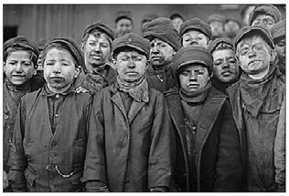
Uluslararası Torino Sosyoloji Kongresi’nin temel sorunlarından biri çalışma hayatının giderek
kötüleşen koşullarıydı. Özellikle kadın ve çocuk emeği gündemin ilk maddelerinden
birini oluşturuyordu.
Muslihiddin Âdil “Ermeni murahhasın, Türk seciyesi ve zihniyeti hakkında ima etmek istediği ifadâta gelince; o sözlere Fransız edip ve tarihşinâsı meşhur Lamartine’in lisaniyle şu sözlerle cevap veriyorum” diyordu: Türkler bir ırk ve millet olarak Doğu halkları arasında en ön sırada “şayan-ı hürmet” bir yer işgal ediyorlardı. Türk’ün bir kavim olarak hasleti yüce ve asil, şecaati eleştiriden uzak, medeni ve ulvi fazileti alnına nakşolunmuştu. Ve bütün hissiyatı alicenabâneydi. Türk “mutekid” yani inanan ve dindar, kahraman ve fedakâr bir kavimdi. Türk ırkı insaniyete şeref veren bir ırktı. Bu satırlar Lamartine’in Solution de la Question d’Orient [Doğu Sorununun Çözümü] başlıklı kitabından alınmıştı.
Muslihiddin Âdil’in Mösyö Varandiyan’a verdiği cevabın ardından, toplantıyı yöneten Fransa’daki Collège de France profesörlerinden Georges Blondel, Türk temsilcinin açıklamalarını pek haklı bulduğunu, “Türk kavminin fazilet-i ahlakiyye ve necâbet-i ırkıyyesi”ne tarihin şahit olduğunu, Türklerin izzet-i nefsini rencide edecek birtakım sözlerin, ulvi hislerle toplanmış bulunan konferans zabıtlarında yer almaması gerektiğini söyleyerek Muslihiddin Âdil’in Mösyö Varandiyan’ın takririnde yer alan “vahşiyâne bir programa teba’en Türk askeri ve ahalisi tarafından katl ve imha edilen” ibaresinin çıkarılması hakkındaki teklifini oya koymuş ve teklif alkışlarla kabul edilmişti.
Kongrede Çalışma Yaşamı
Konferansta ele alınan her bir konu savaş sonrası sosyolojisine yeni ufuklar açıyordu. Bunlar arasında geçmişe oranla zihniyet açısından en özgün olanlar “mesaiye müteallik mesail” ve “iktisadî-ictimaî mesailin hallinde kadın” idi. Savaş sonrası emek-sermaye ve kadın-erkek ilişkileri köklü bir dönüşüme gebeydi. Zira “amele” ve “kadın” savaş yıllarında büyük özveride bulunmuş iki toplumsal katmandı. Torino Sosyoloji Kongresi “mesaiye müteallik mesail” başlığı altında çalışma sorunlarına eğiliyor, savaş sonrası iş mevzuatında çalışanlar lehine önemli gelişmelerin oluşumuna ortam hazırlıyordu. Muslihiddin Âdil “Harb-i Umumi, erbâb-ı mesainin ufk-ı nazarını ve maddiyyatını pek ziyade tevsi etmiştir” diyordu. Savaş ortamında tüm savaşan ülkelerde zafere ulaşmak için yapılan fedakârlıklarda “amelenin büyük bir hissesi” vardı. Savaşın yükünü “müstahdemîn ve işçiler” omuzlamıştı. Top seslerinin sustuğu bir evrede “amele mesaili” tüm ülkelerde gündeme gelmiş ve bu arada uluslararası bir çalışma örgütünün kurulması için ilk girişim Milletler Cemiyeti bünyesinde gerçekleştirilmişti. Bu husus Versailles’da da gündeme gelmiş, antlaşmanın üçüncü kısmında ilan olunan ve ardından diğer barış sözleşmelerinde de ele alınan özel bölümde “mesai teşkilatı”nın hedefleri belirlenmişti. Burada sözü edilen “mesai teşkilatı” Milletler Cemiyeti’nin Uluslararası Çalışma Ofisi’ydi.
Torino’da her şeyden önce Versailles muahedesinin üçüncü kısmında yer alan ve diğer barış sözleşmelerine de konulan çalışma örgütünün on üç ilkesi bir kez daha vurgulanıyordu: Her şeyden önce sekiz saatlik işgünü ya da kırk saatlik haftalık çalışma süresinin henüz benimsenmediği ülkelerde bu ilkelerin kabulü için çaba sarf edilecekti. Mümkün olduğu takdirde pazar gününe düşürülerek asgari yirmi dört saatlik hafta tatili yaygınlaştırılacaktı. İşsizlikle mücadele edilecek, bu amaçla işçi bulma örgütü kurulacaktı. Geçim için yeterli bir ücretin ödenmesi sağlanacaktı. Çalışanlar genel ve mesleki hastalıklarla, işten kaynaklanan kazalara karşı korunacaktı. Şehit yakınlarına ve malullere maaş bağlanacaktı. Yabancı ülkelerden gelen işçiler korunacaktı. Sendika özgürlüğü getirilecekti. Mesleki eğitim ihdas edilecekti. Çocuklar ve kadınlar özel bir mevzuata tabi tutulacaktı. Aynı nitelikte iş için cinsiyet farkı gözetmeksizin eşit ücret ödenecekti. Ülkelerde iş yaşamını düzenleyen kanunlar çıkarılarak tüm çalışanlara uygulanacaktı. Bu ülkelerde çalışanları korumaya yönelik kanun ve nizamların hakkaniyetle uygulanmasını sağlamak ve denetlemek için, üyeleri arasında kadınların da bulunduğu teftiş heyetleri oluşturulacaktı.
Bu hedeflere ulaşmak için Milletler Cemiyeti bünyesinde Uluslararası Çalışma Heyeti [Beynelmilel Heyet-i Daime] oluşturulmuş, Milletler Cemiyeti asli üyeleri bir tür “amele parlamentosu” mahiyetinde olan bu heyetin asli azaları addedilmişti. Heyet, Konferans ve Uluslararası Çalışma Ofisi [Beynelmilel Mesaî İdaresi] olmak üzere iki uzuvdan oluşuyordu. Konferans, Milletler Cemiyeti’ne dahil olan her ülkeden gönderilecek dört murahhası kapsıyordu. Bu dört murahhastan ikisi hükümet tarafından, diğer ikisi işveren ve işçi temsilcilerinden oluşacaktı. Konferans gerek duyuldukça, ancak yılda en az bir kez toplanacaktı. Toplantılar Milletler Cemiyeti’nin merkezinde, Cenevre’de ya da üyelerin üçte ikisinin kararı ile herhangi bir mahalde toplanabilecekti. Konferans yukarıda belirtilen amaçları gerçekleştirmek için alınacak önlemler ve ilkeleri belirlemekle yükümlüydü.
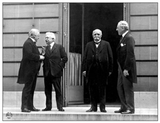
Paris’te imzalanan barış antlaşmalarıyla yenik düşen ülkeler savaş suçlusu olarak üstesinden
gelemeyecekleri ağır yükümlülükler altına sokuluyorlardı. Paris Barış Konferansı’nın dört büyükleri:
Soldan sağa: David Lloyd George (İngiltere), Vittorio Orlando (İtalya), George Clemenceau (Fransa),
Woodrow Wilson (ABD).
Uluslararası Çalışma Ofisi ise, Daimi Heyet’in nezareti altında ve bu meclis tarafından seçilen bir müdürün yönetiminde, on ikisi hükümetleri, altısı işverenleri, yine altısı işçileri temsil eden konferans üyeleri tarafından seçilecek yirmi dört kişiden oluşacaktı. Üyelik süresi üç yıldı. Uluslararası Çalışma Ofisi işçilerin çalışma koşulları üzerine uluslararası düzenlemelere yönelik bilgi toplayacak, özellikle uluslararası sözleşmeler hazırlayarak Konferans’a sunumu gerektiren meseleleri inceleyecek, Konferans tarafından gerekli görülen tüm incelemeleri yerine getirecek ve Konferans’ın gündemini belirleyecekti.
Ancak, Torino Kongresi, Versailles’la da yetinmiyor ve çalışma yaşamını düzenlemeye yönelik daha ileri kararlar alıyordu. Bunlar üç başlık altında toplanıyordu: 1) Mesai kanunları ve say [emek] ile sermaye arasındaki münasebât; 2) Say hakkında ilmî tetkikât ve 3) Mesaî ahidnamesinde tadilat. İş kanunları ve emek ile sermaye arasındaki ilişkiler konusunda Versailles’da belirlenen uluslararası iş sözleşmesi, uluslararası bir parlamento kuruyor ve emekçinin hukukunu uluslararası ortak irade ile güvence altına alıp emek ile sermaye ilişkilerinde yeni bir devri açmayı hedefliyordu. Ancak, bu ulvi hedeflerin gerçekleştirilmesi için Torino, barıştan yana olanların, sanayi, ticaret ve tarımda çalışanlara insani ve adil bir çalışma ortamı temin için Uluslararası Çalışma Ofisi’ne omuz vermeleri gerektiğini vurguluyordu.
Torino Kongresi ayrıca siyaset ve iktisat alanında çalışanlarla ilgili araştırmalara girişerek iş kanunlarının hazırlanmasında bilimin katkılarını bekliyordu. Son olarak Uluslararası Çalışma Ofisi’nin belirlediği hedeflerin o gün için yeterince açık olmadığını belirtiyor ve bu örgütten yararlanabilmek için bu ofisin karar mekanizmasında üçte iki çoğunluk yerine mutlak çoğunluğun uygulanmasını öneriyordu. Üçte iki çoğunlukta emek mağdur durumda kalabilirdi. Bu arada Uluslararası Çalışma Ofisi tarım işçilerini dışarıda bırakmıştı. Tarım için de aynı sanayi gibi düzenlemelere gidilmesi uygun düşerdi. Göçmen işçiler için sefaretlerin bünyelerinde birer çalışma ataşesi [mesai ataşesi] bulundurmaları gerekirdi. Keza gerekli yerlerde iş konsoloslukları [mesai konsoloshaneleri] de açılabilmeliydi. Son olarak çalışma hayatını denetlemek için uluslararası bir teftiş heyeti [heyet-i teftişiyye] oluşturulmalıydı.
Torino Konferansı, bir adım daha öteye gidiyor ve sosyal sigorta meselesine el atıyordu. Çalışanların geleceklerinden emin bir şekilde çalışmaları gerekiyordu. Çalışanın her an karşılaştığı tehlikeye karşı donanımlı olması; hastalık, ölüm, ihtiyarlık, maluliyet, kaza ve işsizliğe karşı gerekli önlemlerin alınması artık çağın gereğiydi. İktisadi kriz durumunda işsiz kalan işçiye belediyelerin ya da hayır derneklerinin yardımı, bu kesimin sefaletini önleyemezdi. Tüm bu tür beklenmedik gelişmelere karşı sosyal sigorta, “ictimaî sigorta” ihdası bir an önce gerçekleştirilmeliydi. Eğer çalışanlar kendi aralarında yardım sandığı, Muslihiddin Âdil’in terimiyle “muavenet-i mütekabile şirketi” kurarlarsa, işçinin tedavisi, fabrikadan aldığı gündeliğin yarısı oranında bir ücret, öldüğü takdirde defin masrafları, ailesine maaş tahsisi gibi giderlerin karşılanmasında sermayedarın da katkıda bulunması elzemdi. Nitekim Almanya’da bu uygulanmaktaydı. Keza emeklilik için sermayedar ve hükümet işçiye yardımda bulunmalıydı. Almanya’da ihtiyarlık sigortası da ihdas edilmişti.
Kadın Sorunu
Konferansın gündemini oluşturan önemli konulardan bir diğeri kadın sorunuydu. Tıpkı işçiler gibi savaş esnasında “cephe gerisindeki boşlukları dolduran kadın”, sanayi ve hizmet sektörünün her sahasında gösterdiği fedakârlıklardan sonra, konumunu pekiştirmiş ve yüzyıllardır kendisinden esirgenen doğal hukukunu elde etmek için mücadeleye girişmişti. Böylece kadın sorunu uluslararası bir nitelik kazanmış ve bilimsel kongreler için önemli bir zemin oluşturmuştu. Muslihiddin Âdil’e göre, konferansta gündeme gelen kadın hukukunun belli başlı talepleri şunlardı: Yasama meclislerinde seçme ve seçilme hakkı; erkeğin tabi olduğu koşullarda bilumum meslekte ayırım gözetilmeksizin çalışmasına olanak sağlanması; aynı iş için cinsiyet farkı gözetilmeksizin kadına eşit ücret ödenmesi; alım satım, taşınır, taşınmaz mal mülkiyeti gibi medeni işlemlerde evli kadının bağımsız kılınması; kadının, özellikle evli kadının irsiyet hukukunun artırılması; çocuklar üzerinde baba gibi annenin de hukukunun korunması ve aile meclislerinde oy sahibi, “haiz-i rey” olması; kimi ülkelerde tanınmayan kadının “şahadet”inin, şahitliğinin tanınması; kadın işçilerin korunması; “gayr-ı meşru” çocuğun kadının nüfusuna kayıt olması.
Kongrede en yoğun tartışılan konulardan biri “kadın hukuku”ydu ve üyeler iki ayrı safta yer alıyorlardı. Muslihiddin Âdil, Selanik günlerinden beri kadının toplumdaki yerini savunan bir aydındı. Nitekim, Selanik’te yayımladığı iktisat kitabına “feminizm” başlığını taşıyan bir bölüm koymuştu.367Torino Konferansı’nda da kadınların safında yer alıyordu. Kongrede onu en fazla şaşırtan kimi kadın üyelerin kadın hukuku konusunda olumsuz tavır koymalarıydı. Bu konuda kitabında şu satırlar yer alıyordu: “Çok samimi olmak için söylüyorum; en güzide kadın azadan iki üçünü de ihtiva eden birinci zümre, kadının ictimaî hayattaki mevkiini aile hayatına münhasır görerek ve onun siyasî hayata iştirakine şiddetle muarız olmuştur. Cenevre hukuk medresesi reisi müderris Tenduri ile, İtalya’nın münevver kadınlarından Sinyora Usella’nın sözlerini bu zümrenin zübde-i efkârı [düşüncelerinin özeti] olarak arz edebilirim.”
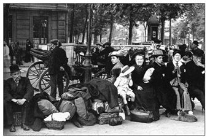
Göç olgusu 19. yüzyılda küreselleşmeyle birlikte ivme kazanmıştı. ABD göçmen kabul ederek
ülkesinin refah düzeyini sürekli yükseltmişti. Savaş yıllarında ise zorunlu göç
birçok kişiyi yerinden yurdundan etmişti.
Kadın konusunda olumsuz tavır koyan Cenevre Hukuk Fakültesi Dekanı Tenduri kongre heyetine şöyle sesleniyordu: “Ben kadının, aile ocağının, aşiyân-ı şefkatinin [şefkat yuvasının] haricinde yaşamasını isteyenlerden değilim. İctimaî hayatın nihayetsiz tufanlarına kapılarak meçhul vadilere doğru sürüklenen kadın, ruhunda bütün bedii heyecanları kaybetmiş bir kadındır. Yarınki nesli uyutan beşiği sessiz ve ninnisiz bırakarak medeniyetin vaat ettiği yüksek sandalyelerin, ümitli rüyasına koşan kadın, arkasında kendisi için gözyaşları döken ne acıklı yetimler bıraktığına vâkıf mıdır? Kadının bugün gitmek istediği yolda, beş bin yıllık insaniyetin hicran ve ıstırapları yaşıyor. Kadın bu yolda giderken asıl analık vazifesine, hakiki hayata ve nura giden doğru yoldan uzaklaşmış oluyor. Saadeti ocağının hararetli sakfında [çatısı altında] aramayı, istikbali idare edecek yavruları müşfik ve samimi elleriyle okşamayı bilen kadındır ki, yüksek nâsiyesiyle [alnıyla] yarınki neslin huzuruna çıkacaktır.” Keza, kadın hukuku aleyhinde konuşan Sinyora Usella da heyete şöyle sesleniyordu: “Tabiata galebe, aklımın ermediği fütuhattandır. Kadınların erkekler gibi aynı mesâlike sülûk etmesini [girmesini] tavsiyeden Allah beni muhafaza etsin! Kadın, ordulara kumanda, tevzi-i adalet, halk huzurunda irâd-ı nutuk için yaratılmamıştır. Tabiat bu meşakkatli ve ciddi vezâif için icap eden evsafı, kuvveti, sesi, sarsılmaz iradeyi, belagât-ı siyasiyyenin mütehevvir savletlerini [hiddetli hücumlarını] kendisinden dirîg etmiştir [esirgemiştir].”
Muslihiddin Âdil, kitabında kadın hukukundan yana olan “ikinci zümre” konuşmacılarından da iki örnek veriyordu. Bunlar Torino Üniversitesi profesörlerinden Kozantini ile Alman Meclisi Reischtag üyelerinden Adel Scheraiber’di. Kozantini kadınların lehine şu sözleri sarf ediyordu: “Hayatta kadının mevkii; erkeğin ta yanı başında bulunmaktır. Bir cemiyetin bir nısfını [yarısını] birtakım hukuka mazhar edip de diğer nısfını bundan mahrum bırakmak doğru olamaz. Yarınki kadın, hukukundan, vazifesinden ve binnetice mesuliyetinden emin olan kadındır. Kadının şu veya bu vazifeyi erkek kadar ifa edememesi, ona verilen terbiyenin tesiridir. Kadını erkeğin şerait-i terbiyeviyyesine, erkeğe sarf olunan itinaya mazhar ediniz, bakınız, onlar da kendi aralarında hukukşinâslar, tabipler, hekimler yetiştiremezler mi? Kadını hayat-ı siyasiyyeden uzak bulundurmak, cemiyetin menâfiine muhaliftir. İntihab [seçim] meselesi bir kabiliyet meselesi değil, bir menfaat meselesidir. Bir memleketin hayatiyle kadın da erkek kadar alakadardır.” Reischtag üyesi Madam Scheraiber de benzer görüşler savunuyordu: “Kadın meselesi, bir cinsiyet meselesi değil, bir insaniyet meselesidir. Hayatta hukuken, vazifeten müsavat vardır. İşte beş bin senedir, cihanı erkekler idare ettiler. Ve nihayet bize böyle müthiş bir harbi hediye verdiler. Şimdi bir kere de bizi tecrübe ediniz, bakınız, biz beşeriyete nasıl bir sulh getirebileceğiz?”
Kadın sorunu tartışılırken “Şark kadınları” da gündeme gelmişti. Özellikle kadın üyeleri en çok ilgilendiren Türk kadınlarının durumu ve çok eşle evlilikti. Konferansa katılanların Şark hakkında yanlış fikirlere sahip olmaları, özellikle Türk kadınları ile ilgili konularda elim bir mahiyet arz ediyordu. Muslihiddin Âdil, söz almak zorunda kalıyor ve İslamiyet ışığında Türk kadınlarını savunuyordu: Batı’da kadınların talep ettikleri hukukun önemli bir kısmını İslamiyet bin üç yüz sene önce İslam hanımlarına temin etmişti. Bu söylediklerine toplantıda hazır bulunanların hayret etmemeleri, ifadesine güvenmeleri gerektiğini vurgulayarak Türk kadınının hukuki konumunu açıklıyor, özellikle son yıllarda Türkiye’de kadın terbiyesine ve eğitimine önem verildiğini, çok eşle evliliğin sanıldığı gibi bir “emr-i mecburî” olmayıp, aksine bir “ruhsat”tan ibaret olduğunu ve bu iznin “pek ağır şerait-i adle [hukuk koşullarına] tabi” olması itibariyle Şark’ta çok eşle evliliğin “hemen metrûk [terk edilmiş]” olduğunu söylüyordu. Torino Kongresi’nde Müslüman kadını savunan Muslihiddin Âdil, İslam’da kadın hukukunun birçok yönden Batı hukukundan üstün olduğunu ileri sürüyordu.
Torino Kongresi’nde kadın sorunu uzun uzadıya tartışılmıştı. Sonuç olarak kongre şu kararları almıştı: Kongre, kadın sorununun yalnız “cinsî” bir sorun olmadığını, insani bir sorun olduğunu dikkate alarak, insanlığın faaliyet gösterdiği her alanda kadının da varlık gösterebileceğini tasdik ediyordu. Bunun sonucu olarak ilk olarak ülkeler, mevzuatlarında, kadına kamu ve özel hukuk alanlarında aynı erkeğin sahip olduğu hukuku sağlamakla yükümlüydüler. İkinci olarak, talim ve terbiye ve mesleki eğitim programları, kadının toplumsal yaşamda görevini en iyi şekilde yerine getirebileceği şekilde düzenlenmeliydi. Son olarak kongre, kadının toplumsal basiret ve servet dağılımı ve tüketiminde etkin bir konum elde ederek iktisadi hayata dair sorunların günden güne özel önem kesbettiğini göz önünde bulundurarak, kadın eğitiminde ev ekonomisi ile yakın ilişkisi olan iktisada yer verilmesini temenni ediyor ve her ülke eğitim kurumlarında görevli kişilere, kadını değişik toplumsal mesleklere girmesini temin edebilecek bir eğitim ile donatmaları, yetiştirmeleri çağrısında bulunuyordu.
Kapitülasyonlar ve Sömürgecilik
Kongrede Türkiye’yi yakından ilgilendiren diğer bir konu uluslararası özel hukukun düzenlenmesi [beynelmilel hukuk-ı hususiyyenin tensiki] idi. Kongrede bu konuda gündemin ilk maddesi bireyin yabancı ülkelerde kendi vatanında haiz olduğu medeni hukuktan yoksun oluşuydu. Uluslararası dayanışma değişik ülkelerdeki özel hukuk mevzuatları arasındaki çelişkilerin, “tezad”ın giderilmesini ve benzer mevzuatın ortak paydada birleştirilmesini gerekli kılıyordu. Ancak, bu beklenti gerçekçi değildi. Hukuk, her ülkenin kendi ananeleri, ihtiyaçları ve yeteneğine göre düzenlenmişti. Bir ülkede uygun ve adil olan yasanın, başka bir ülkede aynı vasıflara sahip olması beklenemezdi. Özellikle, irsiyet, nikâh, vesayet gibi aile hukukuna yönelik mevzuat arasında “ayniyet” beklemek doğru olmazdı. Yapılabilecek tek şey, mevzuatta mümkün olduğu kadar benzerlik ihdas edilmesi ve medeni ve ticari alanda o vatandaşa tanınan hukukun, yabancıya da teşmil edilmesiydi.
Görüşmeler sırasında Muslihiddin Âdil söz almış, kapitülasyonlar nedeniyle Şark’ta mevcut olan istisnai durumu izah etmişti. “Uhud-ı atika”nın, yani kapitülasyonların devamının, toplumsal adalet ve dayanışma fikirleriyle bağdaşmayacağına ve ülkelerin egemenlik hukukunu doğrudan doğruya ihlal ettiğine dikkat çekmişti. Bu nedenle kapitülasyonların kaldırılmasının elzem olduğunu, kongrede bu konuda bir temennide bulunulması gerektiğini söylüyordu. Osmanlı uzun yıllardır kapitülasyonlar nedeniyle uluslararası alanda eşit koşullarda hareket edememiş, ikinci sınıf bir devlet muamelesi görmüştü. Ancak, kongre ne de olsa “düvel-i muazzama”nın hâkim konumda olduğu bir ortamdı. Kapitülasyonlar konusunda karar almak ya da temennide bulunmak kongrenin boyunu aşıyordu. “Siyasî neticeler” doğurabileceği gerekçesiyle kapitülasyonlar gündeme alınmayacaktı.368Kongrenin bu tavrı bir kez daha Türkiye’nin barışçı yöntemlerle kapitülasyonlardan kurtulmasının olanaksızlığını ortaya koyuyordu. Nitekim Osmanlı Cihan Harbi’ne girer girmez ilk iş olarak, kapitülasyonları tek taraflı kaldırmıştı. Ama savaşta yenik düşünce kapitülasyonlar tekrar ihdas edilmişti. Türkiye’nin tek seçeneği silah zoruyla, Milli Mücadele ile kapitülasyonları kaldırmaktı.
Muslihiddin Âdil’e göre, Batı’nın “medeni” ulusları, giderek artan nüfuslarını yerleştirebilmek, ürettikleri mallara pazar bulabilmek, sanayileri için gerekli hammaddeleri temin etmek amacıyla dört asırdan beri sömürgecilik politikası izliyorlardı. 16. yüzyılda, Amerika’nın keşfi üzerine bilhassa İspanyollar ve Portekizlilerin izlediği bu politikayı, 18. yüzyılın ikinci yarısından itibaren diğer Batılı ülkeler de benimsemişti. Son yüzyılda İngilizler bu politikada başı çekmiş, Asya’da Hindistan ve Birmanya, Afrika’da Güney Afrika ve Mısır’a yerleşmiş, Kuzey Amerika’da Kanada’yı, Okyanusya’da Avustralya ve Yeni Zelanda’yı kurmuşlardı. Cihan Harbi arifesinde İngiliz sömürgelerinin genişliği 29 milyon kilometrekareyi, toplam nüfusu ise 350 milyonu buluyordu. Genişlik bakımından sömürgeler İngiltere’nin anavatanının 95 katıydı. İngiltere bu toprakları fethetmiş ya da sahipsiz arazilere yerleşerek imparatorluğunu kurmuştu. Sömürgelerine ulaşımı sağlamak için ise, Cebelitarık, Malta, Singapur, Malaka gibi geçit yollarını zapt etmişti.
İngiltere, Cihan Harbi’ndeki başarısını kısmen sömürgelerine borçluydu. Bu sonuç, diğer ülkeleri de sömürge edinmeye özendirmiş, sömürgecilik ya da o günkü terimiyle “müstamere meselesi” uluslararası sorunlar arasında yer almıştı. Milletler Cemiyeti sözleşmesi, sömürgecilik politikasına “manda” adı altında yeni bir biçim veriyordu. Bu nedenle Torino Konferansı’nda da tartışmalar bu minval üzerinde yürütülmüştü. Savaş ertesi “medeniyet-i hâzıranın bilhassa müşkil bulunan şeraiti dahilinde kendilerini idareye henüz muktedir olamayan mahall ve akvamın sakin oldukları müstemlekât ve arazi” üzerinde “manda” rejiminin ihdas edilebileceği, gelişmiş ülkelerin [milel-i müterakki] işbu vesayeti “mandater” sıfatıyla Milletler Cemiyeti adına deruhte edebileceği belirtilmişti. Uluslararası Torino Sosyoloji Kongresi “müstemlekât mandası” konusunda şu temennilerde bulunmuştu. Öncelikle, “müstemleke mandası teşkilatına, Cemiyet-i Akvam’ın doğrudan doğruya murakabesi altında bulunan muvakkat mahiyeti haiz bir müessese nazariyle bakılmak” gerekiyordu. Mandater devlet müstemlekede çıkaracağı hammadde üzerinde tekel ihdas edemeyecekti. Siyasal ve toplumsal rüştünü ispat eden müstemlekelerin bağımsızlıkları tanınmalı ve bu ülkeler Milletler Cemiyeti’ne üye olabilmeliydiler.
Bu arada Torino Kongresi sırasında, Brüksel ve Paris’te Pan-Noir [Irk-ı Esved - Siyah Irk] kongreleri toplanıyordu. Bu kongrelerle ilgili olarak Torino şu uyarılarda bulunma gereği duymuştu: Öncelikle ırk ve rengi ne olursa olsun her uygar insan hukuk önünde eşit olmalıydı. Kendilerini giderek medeni bir hayata ve siyasi bir bağımsızlığa yönlendirmek için, uygulanacak “esasât-ı medeniyye”ye uygun düştüğü oranda yerel halkın “mezhep ve itikatlarına ve müessesât-ı milliyyelerine” hürmet etmeliydi. Arazi tasarrufunda, emeğin istihdamında Avrupa’dakine eşit koşulların gerçekleştirilmesi için mandater yönetim çaba sarf etmeliydi. Yerel halkın ahlakını yükseltmek ve onlara mesleki formasyon vermek için eğitime önem verilmeli, dayanışma ve sosyal yardım örgütleri kurulmalıydı. “Medenî hayatta geri kalmış milletlerin himaye ve tekâmüllerine müteallik” sorunlarla uğraşmak üzere Milletler Cemiyeti nezdinde uluslararası bir bilimsel komisyon oluşturmalı ve özellikle yerli amelenin korunması ve haklarının savunulması için “Beynelmilel Mesai Kalemi” ihdas edilmeliydi.
Azınlıklar Sorunu
Cihan Harbi sonucu uluslararası camianın gündemine oturan en önemli sorunlarından biri “azınlık”lardı. Daha doğrusu “azınlık” kavramı bir anlamda Cihan Harbi ile doğmuştu. Osmanlı’da da geçmişte azınlığın Osmanlıca karşılığı olan “ekalliyet” sözcüğü hiçbir zaman kullanılmadı. Çok unsurlu bir devlet olan Osmanlı’da Müslümanlar ve gayrimüslimler vardı.
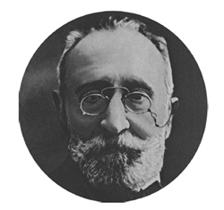
Torino Uluslararası Sosyoloji Kongresi İtalya açısından büyük bir gövde
gösterisiydi. Kongreyi İtalyan parlamentosunda 51 yıl milletvekilliği ve
senatörlük yapmış, bu arada Eğitim ve Hazine bakanlıklarında
bulunmuş olan eski başbakanlardan Paolo Boselli açtı.
Gayrimüslimler “ekalliyet” bağlamında görülmedi. Onlara “milel-i gayrimüslime” ya da “anâsır-ı gayrimüslime” denildi. Genellikle Rum, Ermeni ve Musevi olarak üç kategoride ele alındılar. Müslümanlar ise resmi devlet söyleminde ayrıma uğramadı. Kayıtlarda Müslüman olarak tek başlık adı altında yer aldı. Osmanlı yönetimi azınlık kavramıyla ilk kez Sevr ortamında tanışmış oldu. Muslihiddin Âdil, “ekalliyetlerin himayesi” sorununun Cihan Harbi ertesi toplanan siyasi ve bilimsel tüm kongrelerde gündemin önemli bir maddesini oluşturduğunu kaydediyordu. Milletler Cemiyeti bünyesinde de böyleydi. Basın her geçen gün azınlık sorununa daha geniş yer veriyordu. Torino Kongresi’nde de azınlıklar önemli tartışmalara vesile oldu.
Batı camiası azınlık sorununu uzun yıllar Doğu’nun sorunu olarak görmüştü. Düvel-i Muazzama Yakındoğu’ya bu vesileyle sürekli müdahale etmiş, gayrimüslimlerin hamiliğini üstlenmişti. Bunları Türklerin “istibdat boyunduruğu”ndan kurtarmayı bir “fikr-i insaniyetperverane”, yani insaniyet görevi olarak görmüşlerdi. Muslihiddin Âdil’e göre birçok Batılı tarihçi “Doğu Sorunu”nu, çoğu kez Osmanlıların ya da Türklerin “hissiyât-ı diniyye” ve “izzet-i nefsi”ni rencide edecek tarzda ele almıştı. Ancak, savaş sonrası Yakındoğu’ya özgü azınlık sorunu bundan böyle uluslararası bir nitelik kazanmıştı. Diğer ülkeler için de eskiden “dahili” mesele olarak görülen ve dış müdahale olmaksızın çözümü gereken bu husus bundan böyle, özellikle Avusturya-Macaristan İmparatorluğu’nun parçalanmasıyla “Avrupa meselesi”ne dönüşmüştü. Woodrow Wilson’ın On Dört Noktası her ulusun kendi kaderini çizmesini öngörmüştü. Buna “milliyet düsturu” denmişti. Ancak etnik unsurların yaşadıkları coğrafyalar birbirlerinden Çin seddiyle ayrılmamıştı.
Wilson prensipleri azınlıkların başlı başına bir “küll” oluşturmadıkları bölgelerde giderek “etno-nasyonalizm”lere yol açıyordu. Azınlıklar konumlarından dolayı yakınmaya başlamışlardı. Batılı birçok ülkede siyasal yönetim olarak demokrasi [hükümet-i avam] benimsenmiş ve bu ülkelerde çoğunluğun sözü geçer olmuştu. Bu koşullar altında “ekseriyet”in “ekalliyet”in çıkarlarına ters ve “haksız” bir siyaset izlemesi mümkündü. Bu nedenle “ekalliyet”in, yani azınlığın korunması uluslararası camiayı ilgilendiriyordu. Batı ülkelerinin çoğu bu azınlık sorununu görmezden gelmeye yatkındı. Fransa’da Almanlar; Almanya’da Danimarkalılar, Lehler; Çekoslovakya’da Almanlar, Rutenler, Lehler; Avusturya’da Macarlar, Çekler; Macaristan’da Almanlar, Romenler, Hırvatlar, Rutenler; Belçika’da Almanlar; İtalya’da Almanlar ve Slavlar; Yugoslavya’da Hırvatlar, Müslümanlar, Rutenler, Museviler, Macarlar, Romenler, İtalyanlar; Romanya’da Macarlar, Almanlar, Ukraynalılar, Ruslar, Museviler, Türkler; Yunanistan’da Türkler, Museviler, Bulgarlar, Romenler göz ardı edilemeyecek azınlıkları oluşturuyorlardı. Artık bir ülkede azınlık unsurun, hukukunu savunması ve gerektiğinde dış bir merciye şikâyet edebilmesi bir isyan gibi görülmemekteydi. Azınlıklara bahşedilen hukukun diğer devletlerce denetimi, ülkelerin egemenlik anlayışına ters düşen bir sorun olmaktan çıkmıştı. Azınlıkların talep ettikleri haklar uluslararası bir norma oturtulmalıydı.369
Kongrede azınlıklar sorunu Birinci Komisyon’da görüşülmüştü ve tartışmalara Muslihiddin Âdil de katılmıştı. Türkiye’nin önünde önemli bir azınlık sorunu vardı. Komisyonda söz alan Yunan temsilcisi Mösyö Teryandafilidis, Türkiye’de azınlık hukukunun gerçekleştirilmesi için Sevr Antlaşması’nın harfiyen uygulanması gerektiğini söylemişti. Bunun üzerine Muslihiddin Âdil söz alıyor, Torino Kongresi’nin sorunları bilimsel bir açıdan ele aldığını, henüz tarafların yasama organlarınca tasdik olunmamış siyasi bir antlaşmanın belirlediği ilkeleri, bilimsel birer umde olarak kabul etmenin erken olacağını, öncelikle esasları ilham eden fikirleri iyice tahlil etmek gerektiğini söylüyordu. Bu nedenle Sevr Antlaşması bilimsel bir kongrenin gündemine alınamazdı. Muslihiddin Âdil bu hususa dikkati çektikten sonra, azınlıklar hukukunun önemini vurguluyor ve bu hukukun yürürlüğe konabilmesi için “müeyyide”ye ihtiyaç duyulacağının aşikâr olduğunu söylüyordu. Türkiye de bu gereği derinden hissediyordu. Zira Balkan ülkelerinde Türk unsurun siyasi ve medeni hukukuna riayet edilmemekteydi. Bu elim haksızlıklara son verebilmek için azınlıklar güvence altına alınmalıydı. Ancak, bu teminat her ülkede aynı şekilde gerçekleştirilmeli ve devletin egemenliğini, kendi deyişiyle “hakk-ı saltanatı”nı ihlal edebilecek mahiyette olmamalıydı.
Muslihiddin Âdil’in bu görüşleri, Rus Milli Cemiyeti temsilcisi Biyançaninof ve Torino Üniversitesi profesörlerinden Kozantini tarafından da desteklenmiş ve kongre azınlıklar sorununda şu güvencelerin kayda geçmesine karar vermişti:370Ananeleri, ırksal ve kültürel kimliklerini müdrik ulusal azınlıkların fikirlerini serbestçe ifade edebilmeleri, serbest eğitim olanaklarından yararlanmaları, siyasi ve mezhep özgürlükleri Milletler Cemiyeti’nin güvencesi altında olacaktı. Azınlıkların teminat altına alınan hukukundan dolayı mensup oldukları devletle aralarında ihtilaf vuku bulduğunda söz konusu azınlıklar Uluslararası Daimi Adalet Divanı’na başvurabileceklerdi. Azınlıkların hukukuna tecavüz vuku bulduğu takdirde Milletler Cemiyeti yayın organları bu tecavüzü uluslararası kamuoyuna duyuracaktı.
Uluslararası Ticaret ve Gümrük Siyaseti
Cihan Harbi sırasında ülkelerin iktisat politikaları köklü değişikliklere uğramıştı. Savaş sırasında, devletler ekonomiye müdahale etmiş, ticaret ve sanayi hükümetlerin denetimi altına girmişti. Bu savaşın gereğiydi. Ülkeler savaş ekonomisi uyguluyorlardı. Ancak, barışa geçildiğinde, savaş öncesine dönüş hemen hemen olanaksızlaşmıştı. Savaş yıllarında uygulanan “usul-i himaye” diye adlandırılan korumacı dış ticaret politikası sari bir hastalık gibi dünyanın dört bir yanına yayılmıştı. Serbest ticareti ilke edinmiş olan İngiltere bile bu sürece ayak uydurmak zorunda kalmıştı. Korumacılıktan yana olanlar, uluslararası ticaretin ve işbölümünün dünya barışına ve ülkeler arası dayanışmaya getirdiği katkıyı göz ardı ediyor, ekonominin de bir tür gizil savaş yöntemi olduğu varsayımından yola çıkarak merkantilist bir politikayı benimsiyorlardı: Kendi mallarını diğer ülkelere olanaklar ölçüsünde satmak, buna karşılık ithalatı engelleyerek ülke içinde ürettiği malı tüketmek ilke edinilmişti.
Kuşkusuz “usul-i himaye” ya da korumacılığı haklı çıkaracak birçok husus vardı. Ancak, bu tür bir siyasetin doğuracağı sakıncalar karşısında yararlar tartışılabilirdi. Klasik iktisada göre korumacı politikalar sonucunda mal fiyatları artacak ve özellikle fakir halkın ve işçi sınıfının satın alma gücü düşecekti. Bu anlayış Adam Smith’ten beri iktisadın temel öngörülerinden biriydi ve iktisat kitapları yazan Muslihiddin Âdil’in de paylaştığı bir anlayıştı. Savaş ertesi, ülkelerde milyonlarca insan en temel ihtiyaçlarını karşılayamaz durumdaydı. Savaş taş taş üstünde bırakmamış, harap olan ülkeleri ayağa kaldırmak uzun uğraş gerektirmişti. Birçok fabrika kapanmış ve işsizlik kaygı verici bir düzeye çıkmıştı.
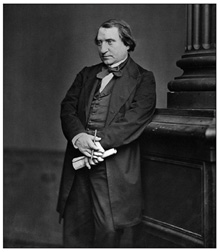
Muslihiddin Âdil Ernest Renan’a gönderme yaparak fedakârlıkları, çektikleri ıstıraplar ve
felaketler oranında bir ülke fertlerinin kaynaştığını kaydediyordu. Bu nedenle, savaş
malulleri ve şehit yetimlerinin refahı için azami fedakârlık gösterilmeliydi.
Torino Kongresi ülkelerin uyguladıkları “iktisadî milliyetçilik” anlayışına karşıydı. “Usul-i himaye”nin bütün Avrupa’yı iflasa doğru sürüklediği kanısındaydı. Bu nedenle “serbesti-i mübadele”, yani gümrük duvarlarının kaldırılarak tekrar serbest ticarete geçişi sağlayacak önlemlerin bir an önce alınması kongrenin temel önerisiydi. İktisatta “tesanüd” ya da dayanışma serbest ticareti gerekli kılıyordu.371Kısaca, korumacı iktisat politikaları savaş ortamında anlamlı olabilirdi. Ama barış evresinde bir an önce serbest ticarete geçmek gerekirdi. Korumacı politikalar Avrupa uygarlığını tehdit ediyordu. Ülkeler buna duyarsız kalamazdı. Her ülke bu tür politikalar sonucu doğacak olan sakıncalar konusunda kamuoyunu aydınlatmalıydı. Uluslararası dayanışma bunu gerektiriyordu. Kongre, Milletler Cemiyeti’nin ülkeler arasında yanlış anlaşılmaları ve haksız rekabet nedenlerini gidermenin, hiç değilse bunları belirli ölçüde sınırlamanın yollarını bulmasını temenni ediyordu.372
Cihan Harbi uluslararası ticareti ve bu arada dış ticaretin finansal boyutunu oluşturan poliçe ticaretini büyük ölçüde olumsuz yönde etkilemişti. Büyük bankaların cüzdanlarında dünyanın her köşesinde ödenmek üzere milyarlar değerinde binlerce poliçe bulunuyor ve poliçeler yoğun bir ticaret alanı oluşturuyordu. Banka yabancı ülkelere mal satmış olan tacirlerden satın aldığı bu poliçeleri, yabancı ülkelerden mal satın almış olan tüccara veriyordu. Son kertede bu evrak da, diğer mallar gibi arz ve talep kaidesine göre değer buluyordu. Ancak bu normal zamanlar için geçerliydi. Olağanüstü ortamlarda kambiyo değerlerinde büyük farklar oluşuyordu. Özellikle parasının değeri düşen ülkelerde bu fark bariz bir şekilde hissediliyor ve uluslararası ticarete ket vuruyordu. Dolaşımdaki kâğıt para miktarını günden güne artıran ülkelerle olan ticarette büyük zorluklar çekiliyordu. Tüm bu gelişmeler dünya ticaret hacmini olumsuz etkiliyor ve ülkeler dışa kapanmak zorunda kalıyorlardı.373
Torino Kongresi, bu tür sorunların üstesinden gelinebilmesi için her şeyden önce Milletler Cemiyeti aracılığıyla dünya ticaretini kolaylaştıracak bir uluslararası kredi kurumunun oluşturulmasını öneriyordu. Bu arada özel bir komisyon, bir “encümen-i mahsus” kurulmalı ve parasal sorunlar masaya yatırılmalıydı. Tüm bu önlemler daralmakta olan dünya ticaretine bir çözüm arayışıydı. Savaş sırasında altın esasından uzaklaşılmış, ülkeler savaşı finanse etmek üzere altın rezervlerine bakmaksızın para basmışlardı. O nedenle ülke paraları arasında bir rayiç oluşturmak güçleşmişti. Tekrar altın esasına dönmek bir çözümdü; ama bunun ülke ekonomileri için önemli sakıncaları olacaktı. Nitekim 20’li yılların ortalarında bunu deneyen İngiltere ülkede genel grevle karşı karşıya kalmıştı. Cihan Harbi’nin çökerttiği altın esasına dayalı dünya para sistemine ancak İkinci Dünya Savaşı ertesi Bretton Woods’la birlikte çözüm bulunabilecekti. Bu nedenle birçok ülke trampa anlamına gelen clearing anlaşmalarıyla çözüm aramıştı. Bu ülkelerden biri de Türkiye idi.
Silahsızlanma ve Savaş Malulleri
Kongrede uzun uzadıya tartışılan konulardan biri de silahsızlanma ya da silahlanmanın sınırlanmasıydı. İki dünya savaşı arası ordular hakkında hüküm vermek kuşkusuz kolay değildi. Zira barış antlaşmaları imzalanmış ama yenik düşen ülkelerde irredantist bir başkaldırı doğmuştu. Ülkeler silah zoruyla kendilerine imzalatılan barış antlaşmalarını kabullenmek istemiyorlardı. Nitekim Anadolu harekâtı Sevr’i tanımayacaktı. Versailles ise Almanya’da Hitler’i iktidara getirecekti. Silahsızlanmaya arka çıkanlar bile “bugün” ve “yarın” olmak üzere konuyu farklı açılardan ele alıyorlardı. Ordular bugün için gerekliydi. Ancak, orduya ve silahlanmaya ayrılan mali olanaklar sınırlanabilir ve askerlik süreleri kısıtlanabilirdi. O gün için silahsızlanma bir hayaldi. Aslında silahlanma bir sonuçtu. Bu sonucu doğuran nedenleri gidermek öncelikliydi. Uluslararası anlaşmazlıkları adalet ilkelerine göre çözecek tarafsız bir “divan-ı âli”nin oluşturulması ve divan kararlarının Milletler Cemiyeti tarafından yerine getirilmesi en uygun çözüm yoluydu.
Milletler Cemiyeti, bu amacı sağlamaya yönelik şekilde tadil ve ıslah edilmeliydi. Ancak esas sorunlardan biri dünyadaki tüm ülkelerin Milletler Cemiyeti’nin bünyesinde yer almayışıydı. Her şeyden önce ABD, Cemiyet’e katılmamış, birçok ülke dışarıda bırakılmıştı. Bu nedenle Cemiyet, ihtilaflarda hakemlik görevini ifa edecek durumda değildi. Milletler Cemiyeti bu tür engellerin üstesinden gelir ve gerçek anlamda bağlayıcı hakemlik görevi görebilirse ülkeler ancak ülke içi kolluk kuvveti bulundurmakla yetinebilirlerdi. Bu tür ütopik görüşlerin sahibi Rusya murahhası Mösyö Biryanpaninof’tu ve kongrede yaptığı konuşmasını şu satırlarla sonlandırıyordu: “Efendiler, ben abide-i medeniyeti harp dedikleri yalçın kaya üstünde değil; sulh ve müsâlemet [barış içinde olma] ovasının ortasında görmek isterim!”
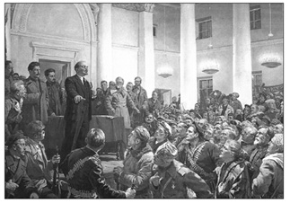
1921 Torino Uluslararası Sosyoloji Kongresi solidarizmin kazanımlarını gündeme taşıyacaktı.
Bir yandan savaşın neden olduğu yıkım, öte yandan Sovyet Rusya’da iktidar olan proletarya
Avrupa’da orta katmanları yeni açılımlara sevk edecekti.
Kongre, Mösyö Biryanpaninof kadar iyimser değildi ve silahsızlanma ya da askeri giderlerin sınırlanması konusunda somut önerilerde bulunmaktan kaçınıyordu. Bunu ise şu gerekçelere bağlıyordu: Her şeyden önce ülkelerin savunma araçları arasında bir denge kurmak kolay bir husus değildi. İkinci olarak bu yöntemle güçlülere karşı zayıf devletlerin savunmasını sağlamak olanaksızdı. Ülkeler arasında dostluğu sağlayacak olan hukuk örgütünün emrine tabi bir uluslararası askeri gücün ihdasının araştırılması kongrede alınan kararlar arasındaydı. Keza, geçici bir önlem olarak silahsızlanmaya yönelik her ülkenin ordusunda bazı düzenlemelere gidilebilirdi. Kongrenin bu hususta bir dizi önerisi vardı:374Askerlik hizmeti hiç değilse bir yıla indirilebilirdi. Silahlı güçlerin sayısı ülkenin nüfusuna orantılı bir biçimde en düşük düzeye çekilebilirdi. Askeri yapılanmaya yardımcı olacak kurumlar ıslah edilebilir, gençlik askerlik öncesi güvenlik konusunda bilgilendirilebilirdi. Deniz kuvvetleri de kara kuvvetlerine benzer bir biçimde yeniden yapılandırılabilirdi.
Muslihiddin Âdil, kitabında vatan sevgisini, bu uğurda çarpışanları ve onların yetimlerini şu satırlarla özetliyordu: “Her yerde, her ferdin en kutsi vazifesi; içinde doğduğu, topraklarının üstünde gezdiği, altında yatacağı, her gün büyüklüklerini gördüğü, her saat güzelliklerini takdir ettiği vatanını sevmek, ona karşı hayatının son dakikasına kadar arz-ı hizmet etmektir. Vatana karşı olan muhabbet ve merbutiyet hiçbir şeyle ölçülemez. Vatanı o kadar büyük bir hiss-i hürmetle, validemizi sevdiğimiz gibi, hiçbir fikr-i menfaate tabi olmaksızın, severiz. Vatan muhabbeti bize, her şeyden evvel onun muhafaza-i mevcudiyeti uğrunda terk-i hayat eden vatandaşların millete yadigâr bıraktıkları eytâmını; harp meydanlarında çarpışırken vücutlarının bir uzvunu kaybeden yarım şehidleri, onların refahlarını, hayat-ı müstakbelelerini düşünmeyi emreder. O eytam ve bu yarım şehidleri, bihakkın taziz ve tevkir [sayma, ululama] edebilmek için, onlara hayatı omuzlarına atılmış, sürüklenecek bir yük gibi değil; vücutlarının cemiyet için lüzumlu ve şerefli bir hatıra, seyyar ve şanlı bir abide olduğu fikrini teslim ettirmelidir.” Muslihiddin Âdil ardından, Ernest Renan’dan bir pasaj aktarıyor ve fedakârlıkları, çektikleri ıstıraplar ve felaketler oranında bir ülke fertlerinin kaynaştığını kaydediyordu. Bu nedenle, savaş malulleri ve şehit yetimlerinin refahı için azami fedakârlık gösterilmeliydi.375Her şeyden evvel bunlara uygun bir maaş bağlamalıydı. İşçi için önerilen sigorta ve tazminat ilkesi harp malullerine de aynen uygulanmalıydı. Bu konuda işlemler basitleştirilmeli, kurumlar arasında eşgüdüm sağlanmalıydı.
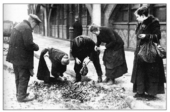
Savaş büyük bir yıkımdı. Kentlerde taş taş üstünde kalmamıştı. Ülkelerin savaş öncesi geçim
düzeyini yakalamaları uzun süre alacaktı. Savaş yıllarında yokluk nedeniyle insanlar aç kalmamak
için çöp yığınlarını eşelemek zorunda kalmışlardı.
Göç Sorunu ve Hastalıklar
Kongrenin ele aldığı bir diğer sorun göçtü. Göç olgusu küreselleşmeyle birlikte ivme kazanmıştı. Göçün değişik nedenleri vardı. Göçü doğuran nedenlerin başında işsizlik ve geçim sıkıntısı geliyordu. Ülkesinde geçimini temin edemeyen göç etmek zorunda kalıyordu. Göç, hem göçe izin veren, hem de göçü kabul eden ülke için iktisadi açıdan yararlı bir olguydu. Nüfusu yıldan yıla artan bir ülkede göç, fazla nüfusun diğer bir ülkeye kaydırılması suretiyle geride kalanların daha bir refah ve saadetine vesile oluyordu. Göç edenler de yeni coğrafyalarda emeklerini daha verimli kullanıyorlardı ve geçim sorunlarına çözüm bulmuş oluyorlardı. Öte yandan doğal kaynaklarını işletmek için kendi beşeri sermayesi yetersiz olan ülke göçmen alarak ülkedeki kaynakları daha etkin bir biçimde değerlendirmekteydi. Nitekim ABD göçmen kabul ederek ülkesinin refah düzeyini sürekli yükseltmişti.
Ancak, göçün uygun normlarda gerçekleşmesi için Torino Kongresi belirli ilkeler koymuştu. Bunlar sırasıyla şöyleydi: Öncelikle, göçün yararlı olması için göç kabul eden ülke, gerçekten yabancı işgücüne ihtiyaç duymalıydı. İkinci husus, göçmenlerin maddi ve manevi bir sermaye sahibi olmalarıydı. Fakir ve sefil insanlardan oluşan bir halk kitlesi, göç kabul eden ülke için yük olmanın ötesine geçmezdi. Bir diğer husus göçmen, göç ettiği ülkelerdeki çalışanların yaşam koşullarını olumsuz etkilememeliydi.Nitekim Japonya’dan ve Avrupa’dan Amerika’ya göç ederek daha düşük ücretle çalışanlar Amerikan işçisinin yaşam düzeyini olumsuz etkileyebiliyordu. ABD hükümeti bu durumda göçmenleri sınırlamak zorunda kalmıştı. Diğer bir husus göç siyasi ya da mezhep farklılığı nedeniyle olmamalıydı. Son olarak göç, mutlak bir yurt edinme hakkını “hakk-ı tavattun”u gerektirmemeliydi. Devletler ülkelerinde temelli yerleşimi belirli koşullara bağlayabildikleri gibi, tümüyle yasaklayabilmekteydiler.376
Cihan Harbi beşeri sermayeden on milyonlarca kişinin telef olmasına yol açtığı gibi toplumsal yapılarda da derin yaralar açmıştı. Evlilik müessesesi büyük darbe almıştı. İçki, morfin, kokain, afyon gibi alışkanlıklar geniş kitleleri sarmış, kumar, fuhuş hemen her ülkede toplumsal hastalıklara, “emrâz-ı ictimaiyye”ye ortam hazırlamıştı. İstatistikler her geçen gün durumun daha da vahimleştiğini gösteriyordu. Bu konuda ülkeler kendi başlarına çözüm bulmakta zorlanıyordu. Bu sorunlara uluslararası düzeyde eğilmek gerekiyordu. İçki konusunda birçok ülke, bu arada ABD ve Türkiye, yasaklayıcı önlemlere başvurmuştu. Ancak yasaklarla çözüm bulunamayacağı kısa sürede anlaşılmıştı. Torino Kongresi her türlü toplumsal sorunu kendi alanında görüyor ve bu nedenle toplumsal hastalıklar alanında da bir dizi karar alıyordu. Bir diğer deyişle ülkelerin öjenik önlemler alması, insan neslinin ıslahı ve nüfusun artırılması kongrenin belirlediği hedefler arasındaydı. Böylece doğaya aykırı fiillere [hilaf-ı tabiat ef’ale], toplumsal olmayan eğilimlere ve yozlaşmaya [gayr-ı ictimaî temayülât ve tereddi] karşı bir dizi öneri getirilmişti:
Her şeyden önce toplumsal hastalıklarla mücadele için ülkelerdeki kurumlar arasında işbirliği gerekiyordu. İnsan türünün bedenen ve fikren ıslahı için uluslararası düzeyde önlemler alınmalıydı. Bedensel, ruhsal, fikirsel, ekonomik ve toplumsal vahim sonuçları olan ve insanların gelişimine ket vurarak ıstıraplarını sürekli artıran her türlü toplumsal zehre karşı insanlığın gecikmeksizin koruma altına alınması gerekiyordu. Kongre, toplumsal zehirlere ve bilhassa alkolizm ve afyon, morfin, kafein ve tütün gibi bağımlı kılıcı maddelere karşı mücadele için incelemelere girişecek ve sonuçları bir sonraki uluslararası sosyoloji kongresinde sunacak bir komisyon oluşturmuştu. Ayrıca Milletler Cemiyeti’nin nezareti altında “zararlı kültür ve sanatlar” [muzır harslar ve sanatlar] yerine “yararlı harslar ve sanatlar”ın [müfit harslar ve sanatlar] ikame edilmesini ve her uygar ülkede, özel mevzuat ile, çocuğun ana rahminden itibaren korunmasını sağlayacak makul bir terbiye usulünün kabul edilmesini temenni ediyordu. Son olarak kongre çocukları kurtarmanın uluslararası bir vecibe olduğunu tasdik ediyor ve bu amaçla kurulan kurumları aralarında dayanışmaya gitmeye davet ediyordu.
Uluslararası Kültürel İlişkiler
Muslihiddin Âdil’e göre 1920’lerin başında, dünyada 280 üniversite ve yüksekokul, 1.000 sanat okulu, 25.000 öğretim elemanı, yarım milyon öğrenci ve her ülkede ortalama yüz kadar bilimsel dernek vardı. Bütün medeni âlemde, yılda 180 bin kitap basılıyor ve altmış devlette binden fazla genel kütüphane bulunuyordu. İşte bu devasa fikir dünyasını daha verimli kılabilmek için uluslararası alanda kültürel ilişkileri özendirmek, kültürel işbirliği için gerekli örgütlenmelere gitmek zorunluydu. Böylece, uluslararası kültürel ilişkiler, bilimsel ortamlarda, her türlü kongre ve yayınlarla uygarlığın gelişimine hız kazandıracaktı. Uluslararası kültürel ilişkilerde, özellikle üniversitelerin başı çekmesi doğaldı. Bir ülkenin fikir dünyası büyük ölçüde üniversitelerde oluşuyordu. Üniversite “millî şuuru kemâle erdiren bir hars merkezi” idi. Bir milleti diğer milletlerden ayıran farklar ve özellikler ancak o milletin kültüründe özümlenmişti ve üniversiteler bu kültürün işlendiği odaklardı.377
Kongrede, Brüksel’de uluslararası bir üniversitenin kurulması önerilmişti. Değişik ülkelerden gelecek öğretim kadroları aynı çatı altında dönüşümlü olarak eğitim vereceklerdi. Bu arada uluslararası bir “kültür” [hars] oluşturmak için ülkeler kendi eğitim kurumlarına diğer ülkelerden yabancı öğretim elemanı getirteceklerdi. Uluslararası “kültür” “millî fikir cereyanları”nı ihlal etmeyecek, bilakis onlar arasında uyum sağlayacaktı. İlkokullardan itibaren, genç nesillere adalet ve uluslararası dayanışma fikirleri telkin edilecekti. Milletler Cemiyeti bünyesinde uluslararası bir yayın organı oluşturularak değişik ülke yazarlarının katkıları beklenecekti. Değişik ülkelerin diplomalarının denkliği sağlanacaktı. Ve nihayet kongre, Uluslararası Çalışma Ofisi gibi bir de Uluslararası Fikrî Çalışma Ofisi, Muslihiddin Âdil’in çevirisiyle Mesai-i Fikriyye Beynelmilel İdaresi kurulmasını talep edecekti.
Ve “Bolşevizm Meselesi”
Torino gibi, İtalya’nın Petrograd’ı diye bilinen bir kentte uluslararası sosyoloji kongresi gerçekleştirilip “Bolşevizm sorunu”na değinilmemesi beklenemezdi. Sovyet Rusya’da 1917 Devrimi’yle proletarya diktatörlüğü kurulmuş, 1921’e kadar Savaş Komünizmi diye bilinen bir evreden geçilmişti. 1921’de Lenin bir adım geri çekilerek NEP diye bilinen ve ülkede baş gösteren açlığa çözüm getiren bir politikayı benimsemişti. Bolşevizm Avrupa’nın birçok ülkesinde yankı uyandırmıştı. Bu ülkelerden biri İtalya idi ve Torino “kızıl kent” olarak bu konuda başı çekiyordu. Marksizmin sosyolojiyi reddettiği bir evrede Torino’da sosyoloji kongresi toplanmıştı. Reformist yönüyle sola açılan ancak çatışma yerine uzlaşmayı öneren ve bu yönüyle sosyal demokrasiye uzanan solidarizm bir anlamda Bolşevizme reddiyeydi. Muslihiddin Âdil de ilerici görüşlere sahip olmasına karşın Bolşevizme karşıydı. Bakunin’in anarşist görüşlerinden farklı olmadığını ileri sürdüğü Rus “inkılâb-ı kebir”i ona göre Avrupa’yı tehdit ediyordu.
Kongrede de Bolşevizm tartışılmış ve şu kararlar çıkmıştı: Rus milletinin derin ıstırabı, bütün dünyada tahripkâr bir mahiyet almıştı. Bu felaketin mahiyeti kamuoyunca yeterince bilinmiyordu. Kongrede Bolşevizmin hükümet tarzı itibariyle “şayan-ı nefret ve ictimaî bünyede ma’yûb [ayıplanmış] ve na-kabil-i tahammül bir karha [yara]” teşkil ettiği vurgulanıyor, “zulme karşı ictimaî bünyeyi müdafaa hakkında insaniyet ve medeniyet umdelerine tevfiken Rus meselesinin pek kısa bir müddet zarfında halline çalışmasının bilumum hükümet ve akvam için en mübrem bir vazife olduğu” kaydediliyordu. “Kongre, medeniyeti tehdit eden ve cemiyetin sulhperver bir tarzda tekâmülüne mâni olan zulm ve ceberruta müstenid her tarz hükümeti red ve takbih eyler”di.
1917-1921 arası Sovyet Rusya’da yaşananlar tüm Avrupa’da yakından izleniyordu. Gelişmelerin salt Rusya’da kalmayacağı ve giderek Avrupa ve diğer ülkelere sirayet edeceğinden korkuluyordu. Nitekim bizzat İtalya, işçi konseylerinin tehdidi altındaydı. Bu açıdan Torino Sosyoloji Kongresi “iki arada, bir derede” kalmıştı. Bir yanda Paris’te Cihan Harbi’nin yenik düşen ülkelerini savaş suçuyla yargılayan antlaşmalar imzalanıyor ve bu durum ülkelerin kamuoyunda infiale neden oluyordu. Öte yanda Bolşevik Devrimi savaş meydanlarında tükenmiş işçi kesimine diktatoryal yöntemlerle yarınlar vaat ediyordu. Torino Sosyoloji Kongresi’nin sığınağı ise kökeni Fransız Radikal Partisi’nin başbakanı ve Milletler Cemiyeti’nin ilk başkanı Léon Bourgeois’nın “solidarité” ya da dayanışma anlayışıydı. Birçok yöne çekilebilen solidarizm, Marksist olmayan Fransız solunu da etkisi altına almıştı. Bir başka versiyonu Osmanlı topraklarında Ziya Gökalp’in öncülüğünde ulus-devlet inşa etmek için kullanılıyordu. Solidarizm aynı zamanda Türkiye’nin kuzey komşusundaki Bolşevik gelişmelerle arasına mesafe koymaya da yarayacaktı. Nitekim solidarizmin siyasette uzantısı halkçılık, Bolşevizme karşı bir kalkan görevi görecekti. 30’lu yıllardaki “kültür” sürecinin ilk aşamasında gündeme gelen “vatandaşlık bilgisi” büyük ölçüde solidarizmden esinlenecekti. İşte Uluslararası Torino Sosyoloji Kongresi solidarizmin ilk kez sınandığı bir ortamdı. Sosyolojiyi geniş bir tabana oturtmuş, ona işlevsel bir boyut kazandırmıştı. Ancak, bu tür bir anlayışın iki dünya savaşı arası uzun soluklu olması beklenemezdi. Nitekim kongreden bir yıl sonra Mussolini Roma’ya yürüyecekti.
360 Dr. (F) Ulrike Schuerkens [Humboldt-University Berlin], “Les Congrès de l’Institut International de Sociologie de 1894-1930 et l’internationalisation de la sociologie”, International Review of Sociologie, 6, 1, 1996, 7-24.
361 Yavuz Abadan, Amme Hukuk ve Devlet Nazariyeleri, Ankara: SBF Yayını, 1952. s. 80. Anayasa hukuku = (Droit constitutionnel) Bu hukuk dalı, devletin esas teşkilâtı ile vatandaşların esas haklarını ihtiva eden bellibaşlı iki kısımdan terekküb eder. Devletin yüksek organlarının teşekkül tarzını, birbiriyle münasebetlerini, vazife ve yetkilerini belirten esas teşkilâtın nâzım prensipleri, ya kuvvetlerin birlik ve bütünlüğü (Rousseau), yahud ayrılığı (Montesquieu) prensipleridir. Bunlardan birincisi eşitliği esas tutan demokrasinin temeli, ikincisi ise hürriyeti bilhassa devlet müdahalesinden kurtulma mânasında menfî hürriyet haklarını teminat altına almağı esas gaye bilen liberalizmin şartıdır.
362 “Türk murahhası nutkunda, harb-ı umuminin istilzam eylediği azim fe-
kadârlıkları tazmin ve telafi etmenin, devamlı bir sulh tesis eylemenin bütün milletlerce müşterek bir dilhâh [gönül dileği] olduğunu ve bu gayeye vusül emrinde yalnız beynelmilel hukukta ıslahat icra edilmesi değil; belki ictimai hayatta, muhtelif milletlere mensub müntesibîn-i ilmin ve ricâl-i siyasiyyenin daha samimi bir hiss-i tesanüdle çalışması lazım geldiğini beyan ve bir memlekette ârifler zümresinin efkâr-ı amme üzerindeki tesirini izah ederek beynelmilel tesanüd fikirin inkişafını temin için in’ikad eden kongrenin mürettiblerine [düzenleyicilerine] ve İtalyan milletine Türklerin ve Türk Darülfünunu’nun hissiyat-ı müdevvetkârânesini iblağ eyledi.” Muslihiddin Âdil [Darülfünun Hukuk-ı İdare Müderrisi – Esbak Maarif Müsteşarı], Beynelmilel İctimaiyyat Kongresi ve İntibalarım, İstanbul: Matbaa-i Amire, 1338-1341. (Turen: 9-16 Teşrin-i evvel 1921), s. 5-6.
363 Muslihiddin Âdil [Darülfünun Hukuk-ı İdare Müderrisi – Esbak Maarif Müsteşarı], Beynelmilel İctimaiyyat Kongresi ve İntibalarım, İstanbul: Matbaa-i Amire, 1338-1341. (Turen: 9-16 Teşrin-i evvel 1921)
364 Muslihiddin Âdil, Malumât-ı Vataniyye, Orhaniye Matbaası, 1924.
365 The American Journal of International Law, cilt 17, No. 4 (Ekim 1923), s. 766-768.
366 Muslihiddin Âdil bu doğrultuda alınan kararları kitabında şöyle özetliyordu: “Yaşayabilecek bir uzviyet olabilmesi için Cemiyet-i Akvam ahidnamesinde icrası icab eden tadilat:
1- Cemiyet-i Akvam’ı teşkil eden uzuvlar arasında daha fazla bir imtizac ve ahenk temin etmek ve ‘Meclis’ ile ‘Heyet’ arasında tehlikeli bir ikilik husulüne mâni olabilmek için, Meclis ve Heyet arasında, meşrutî memleketlerde kuvve-i icraiyye ile kuvve-i teşriiyye beynindeki münasebât gibi münasebât olmalıdır. Bu suretle Meclis kendi azalarını intihab ve kararlarını kabul ve tasdik edecek olan Heyet’ten neş’et etmelidir.
2- Cemiyet-i Akvam’a daha fazla bir nüfuz ve kuvvet ve âlemşümul bir mahiyet verebilmek için, dühul talebinde bulunan bilumum müstakil devletler, Beynelmilel Adalet Divan-ı Daimisi kararlarıyla ve en kısa bir müddet zarfında bu yeni teşkilat-ı beynelmileliyyeye kabul edilmeli ve divan-ı mezkûrun nizamname-i esasîsi de bu nokta-i nazara göre ikmal olunmalıdır.
3- Meclis ve Heyet azalarına fazla nüfuz ve istikrar verebilmek için, bunlar hükümetler tarafından değil; heyet-i teşrîiyyeler tarafından, parlamentonun feshi hali müstesna olmak şartıyla, laakal üç sene müddetle intihab edilmelidir.”
367 Zafer Toprak, “Muslihiddin Âdil’in Görüşleri: Kadın ve ‘Hukuk-ı Nisvan’ ”, Toplumsal Tarih, sayı 75, Mart 2000, s. 14-17.
368 Kongre yine de uluslararası özel hukukun düzenlenmesi doğrultusunda önemli kararlar almıştı: “Her ferdin, ecnebî bir memlekette, kendi vatanında haiz olduğu hukuk-ı medeniyyeye aynen mazhar olabilmesini ve kavanin-i hususiyyenin ihdas ettiği kuyudâtın beynelmilel tesanütte muktezi olan iştirak-ı hukuk ve menâfi’e münâfi [aykırı] olamamasını temin etmek için: Ahval-i şahsiyyeye müteallik kavânin ile hukuk-ı medeniyye ve ticariyye ve hassaten kavânin-i ecnebiyyeye mütedair mevadda beynelmilel mukavelât tanzim ve akd edilmesi zımnında, Cemiyet-i Akvam bilumum milletler nezdinde teşebbüsât icra etmeli ve mukavelâtın, muhtelif kavânin-i hususiyye arasındaki tezadları izale edebilecek müşterek esasât-ı hukukiyyeden mülhem olmasını temin eylemelidir. Bu itilafların akdine intizâren ve bu fikrin hakikat sahasında tecellisini teshil etmek için, Kongre:
1- Bilumum medeni milletler hükkâmının [hâkimlerinin], ihtilafâtın hall ü hasmında [çözümünde] intizam-ı ammeyi ihlal etmedikçe, hüküm ve ictihadlarında, ferdin hürriyetine ve ahvâl-i medeniyye ve şahsiyyesine hürmet fikrinden mülhem olmalarını temenni eyler.
2- İhtilafın hall u hasmında, tenfiz ve icra edileceği memleketin asayişini muhâl olmamak şartiyle ve mukavele edenleri tabiiyyeti ve mahall-i mukavele nazar-ı dikkate alınmaksızın, şürût-ı kanuniyyesine tevfiken akd edilmiş olan bilumum mukavelât-ı hususiyye ve ticariyyeye riayeti tazammun eden mukarrerât ittihaz edilmesini bilumum medenî milletler hükkâmından temenni eyler.”
369 Bu ilkelerin başlıcası Muslihiddin Âdil’in diliyle, şu şekilde sıralanmıştı.
1- Bilcümle tebaanın kanun nazarında müsavatı;
2- Bütün ahaliye hayat ve hareketlerince himaye-i kâmile ve serbestçe icra-i ayin hukukunun temini;
3- Irkî, dinî ve lisanî ekalliyetlerin diğer tebaa gibi muamele görmesi ve fiilen ve hukuken aynı emniyetten istifade eylemeleri;
4- Mahâkim ve devâir huzurunda ve sair umur-ı ammede ve umur-ı hususiyyede kendi lisanlarını istimal edebilmeleri hakkı;
5- Irkî ekalliyetler muayyen ve kâfi derecede mütecanis zümre halinde yekdiğeri yanında sakin bulundukları yerlerde, bu ekalliyetlerin devlet intizam-ı umumiyyesiyle kabil-i telif en vasi bir adem-i merkeziyete tabiiyetleri;
6- Lisanî ekalliyetler, ahalinin mühim bir nispetini teşkil ettiği devletlerde bu ekalliyetler lisanının bütün muamelât-ı resmiyyede devlet lisanına mütenazır olarak istimal olunması ve ekalliyetlerin az nispette bulundukları mıntıkada, ekalliyetler lisanının yalnız resmî mahiyeti haiz tebligatın umumunda kullanılması;
7- Ekalliyetlerin mühim nispette bulundukları yerlerde tahsilin ve bilhassa tahsil-i ibtidaiyyenin kendi ana lisanlarında yapması emrinde kendilerine teshilât gösterilmesi.
8- Ekalliyetlerin zararına olarak kavânin-i mahsuse vaz’ olunmaması ve muahedelerde ekalliyetlere müteallik mevadd ahkâmının akit devletlerce kanun-ı esasî kuvvetinde tanınması ve hiçbir kanun ve nizamın bu mevadda taarruz veya takaddüm edememesi;
9- Ekalliyetlerin büyük bir nispette bulunduğu şehir ve mıntıkalarda bu ekalliyetlere devlet, belediye bütçeleriyle sair bütçelerden maarif ve umur-ı hayriyyeye hâdim olmak maksadıyla tahsis olunabilecek mebâliğden adilâne bir hisse temini.
370 “Ananelerini, ırkî ve harsî şahsiyetlerini müdrik bulunan millî ekalliyetler fikrî ve tedrisî serbestî-i inkişafları ve siyasî ve mezhebî hürriyetleri Cemiyet-i Akvam tarafından müessir bir surette temin edilmelidir. Ekalliyetlere temin olunan hukuktan dolayı bu ekalliyetlere, mensup oldukları devlet arasında ihtilaf zuhurunda, mezkûr ekalliyetler doğrudan doğruya Beynelmilel Adalet Divan-ı Daimisi’ne müracaat hakkını haiz olmalı ve divan-ı mezkûrun nizamname-i esasîsi de bu nokta-i nazara tevfik edilmelidir. Ekalliyetler hukukuna tecavüz vuku’u takdirinde Cemiyet-i Akvam’ın nâşir-i efkârı olan matbuat bu tecavüzü efkâr-ı umumiyyeye ilân eylemelidir.”
371 Bu amaçla Kongrede şu kararlar alınmıştı: Kongre; 1- Beynelmilel iktisadî tesanüdün, Avrupa’nın yeniden imarı ve ihyası için şart-ı esasî olduğunu mülahaza ettiği; 2- Aynı zamanda tedricen daha vasi bir serbesti-i mübadele devresine vasıl olabilmek için muvakkat tedâbirin ittihazını muvafık bulduğu; 3- Ve halen eski ve yeni dünyada hükümran olan ve yalnız gümrük tarifelerinin tezyidiyle değil, fakat ancak hâl-i harbde şayan-ı kabul olabilecek birtakım idarî takyidât ve mevâni’in hükümetlerin keyfi hareketleriyle, hâl-ı sulhde de ika edilmesi suretiyle mübadelâtın tekâmülü ihtiyac-ı umumiyyesiyle tezad teşkil eden şedid bir usul-i himayenin kabulü, beynelmilel iktisadî tesanüdün teessüsü için bir musibet olduğunu nazar-ı dikkate alarak temenniyat-ı atiyyeyi dermeyan eyler.
“Avrupa medeniyetini tehdit eyleyen vaziyet-ı hâzıraya lakayd kalamayan her memlekette, propaganda teşkilatı vücuda getirilerek bu tecerrüd-i iktisadî zalâletinin istilzam edeceği na-kabil-i ictinab ve karib netâic hakkında efkâr-ı umumiyye tenvir edilmelidir.”
372 “Şedid usul-i himaye” eğiliminin dünyanın dört bir yanında revaç bulduğunu dikkate alarak Kongre şu temennilerde bulunuyordu: “Cemiyet-i Akvam, nukât-ı atiye [aşağıdaki noktalar] hakkında beynelmilel tahkikat icrasına tevessül etmelidir:
1- Her tarafta tatbikine başlanan yeni usul-i himaye siyasetinin inkişafı ve tesirâtı ve bu siyasetin cihanın imar ve ihyası fikrine derece-i muvafakatı;
2- Harbden en ziyade mustarip olan memleketlerde tabii hâlin avdetini işkal ve tehir ettiği cihetle evrak-ı nakdiyyesi kıymetten düşmüş olan memleketler tarafından ithalatın men’ine dair neşr ve ilan olunan kanunlar;
3- Beynelmilel itilaflarla, kavanin-i mezkûreden hiç değilse esasât-ı iktisadiyyeye en ziyade mugayir olanlarını fesh edebilmek maksadıyla alakadar olan devletler arasında bir konferans akdi ve bu bâbda icab eden vesaitin ihzarı.”
373 Kongre bu durumu göz önünde bulundurarak aşağıdaki kararları almıştı:
“Kongre, kambiyo meselesini beynelmilel hayat-ı ticariyyenin iadesi emrinde ehemmiyet-i azimeyi haiz bulunduğunu; ve diğer taraftan ekser memleketlerin, ahvâl-ı hazıra-i iktisadiyye karşısında evrak-ı nakdiyyenin mecburi tedavülünü ref etmeye muktedir olamadığını nazar-ı itibara alarak, kambiyo fiyatı hakkında bazı tedâbir ittihaz edilmesini temenni eyler:
1- Muhtelif memleketler arasında mübadelâtı teshil edecek beynelmilel kredi teşkilatı ihdas edebilmek için Cemiyet-i Akvam’ın müzaheretiyle beynelmilel itilaflar akd edilmelidir.
2- Muhtelif memleketlerde evrak-ı nakdiyye iştira edilebilmesi esbabını ve beynelmilel yeni vasıta-i mübadele ihdasını bittetkik kambiyo istikrarını temin edebilecek ameli bir çare taharri etmek üzere bir encümen-i mahsus teşkil edilmelidir.
3- Kongre, siyasî netâice destres olmak [erişmek] maksadiyle bil-iltizam miktarı teksir edilen evrak-ı nakdiyye meselesini musârahaten [aşikâr olarak] hadde-i tetkikten geçirmesi hakkında Londra’da in’ikad edecek malî konferansın nazar-ı dikkatini celb eder.
4- Diğer taraftan Kongre, nakdin ve itibârın beynelmilel esasına müsteniden malî ve iktisadî müşkülatın halli hakkında, gelecek kongrenin ictima’ına kadar esbâb-ı mucibeli bir rapor ihzar etmek üzere, kendi azası meyanından müntehib bir komisyon intihab eyler.
5- Kongre, kambiyo buhranının tesviyesini teshil için, azasının, muhtelif memleketlerde devletin hayat-ı maliyyesi hakkında efkâr-ı umumiyyeyi tenvir emrinde sebk edecek mesaisine zahir olacağını beyan eyler.
374 Kongrenin bu husustaki önerileri şöyleydi:
1- Hizmet-i askeriyyeden hiç değilse bir sene tenzil edilmelidir.
2- Kuvve-i umumiyyeyi, nüfus-ı umumiyyenin miktarına ve müdafaanın icabâtına göre hadd-i asgariye tenzil etmelidir.
3- Teşkilât-ı askeriyyeye yardım edebilecek bilumum müesseseleri ıslah ederek gençliğin, askerliğe takaddüm eden usul-i terbiyyesini tekemmül ettirmelidir.
4- Teslihat-ı berriyye gibi teslihat-ı bahriyyeye de aynı esasları ve aynı tahdidâtı teşmil etmelidir.
375 Bu sorunu, gerek ulvî hislerle gerekse sosyal bir sorumluluk olarak ele alan kongre şu kararları almıştı:
“Kongre, harbe iştirak etmiş olan bütün milletlerin, atideki esaslar dairesinde hareket etmesini kendileri için bir şeref ve namus borcu addeyler:
1- Malulîn-i askeriyyenin, derece-i mamuliyyetlerine göre, kendileri ve aileleri için uygun bir maaşa mazhariyeti,
2- Askerî tekaüt maaşının, bu maaşı bir irat olarak getirebilecek bir sermaye haline ifrağı,
3- Kazalara karşı ameleye temin olunan sigorta ve tazminat esasının harp mamullerine de aynen tatbiki,
4- Tekaüt ve eytam ve erâmil [dul] maaşı tahsisi hakkındaki muamelât-ı kırtasiyyenin son derece basit bir şekle ifrağı ve bunun için hususi bir usul-i tahkikiyye ihdası,
5- Şüheda eytamın himayesi ve tahsili için mevcud olan –gerek devlete, gerek vilayete ait– bilumum müesseseler arasında bir tesanüt ve irtibat tesis ve bu müesseselerin en faal ve mahir ellere tevdi’i ve bu husus için hassaten kadınların faaliyetinden istifade edilmesi.
376 Bu ilkeler doğrultusunda kongre şu kararları kabul ediyordu:
“Kongre, 1- Vasi mikyasta hicret eden milletlerin, ekseriyetle efradına saha-i istihsal olacak müstemlekelerden mahrum olduğunu; 2- Muhaceretin beynelmilel tensik ve tanziminin, işsizliğe karşı mücadele ve cihanın menabi-i tabiiyyesini nemadar edebilmek için büyük bir faideyi istilzam edeceğini; 3- Muhaceretin, bilhassa harbin hasarâtından mütevellid mecburi hicretin fuhuşu teshil ve diğer ictimaî emrâzı tevlid eylediğini nazar-ı dikkate alarak şu temennileri serdeyler.
1- Nüfusu nispeten geniş bulunan ve mesaisini hariçte daha müessir surette kıymetdar edecek olan memleketlerdeki muhaceret cereyanlarına, tesanüd-i beynelmilel fikrinin tekâmülü nokta-i nazarından müşkülat ika’ edilmemelidir.
2- Ya doğrudan doğruya hükümetler, yahud Cemiyet-i Akvam’ın himaye ve nezareti altında hususî cemiyetler tarafından idare edilmekte olan kadın ve genç kızların himayesine müteallik teşkilat-ı beynelmileliyye, henüz Cemiyet-i Akvam’a dahil olmayan memleketler de dahil olduğu halde, her yerde mazhar-ı teşvik ve müzaheret olmalıdır.”
377 Torino Kongresi, uluslararası kültürel ilişkiler alanında şu kararları almıştı.
1- Kongre, “Brüksel Beynelmilel Darülfünunu”nun* teessüsünü alkışla ve bütün milletler âlim ve muharrirlerinin bu büyük tesise iştirak ederek tesânüd-i beynelmilel rebâbıtını takviye eylemelerini temenni eyler.
[* Brüksel Beynelmilel Darülfünunu, muhtelif milletlere mensub müderrisleri, aynı sakf-ı irfan altında toplamış olan bir müessese-i âliyedir. Ekser devletler, darülfünun müderrislerini münavebeten burada icra-i tedrisata memur etmektedir. Mamafih bu darülfünunda daimi kürsü işgal eden ecnebî müderrisler de vardır. Brüksel beynelmilel darülfünununda daimi bir kürsü ihdası için ilk defa tahsisat veren ecnebî devlet, Bulgaristan’dır!]
2- Kongre, sınaat, edebiyat ve fen sahasındaki büyük cereyanlardan haberdar olmak ve bu sayede beynelmilel bir hars vücuda getirmek maksadıyla, bütün darülfununlardan ve âli ve tali hars müesseselerinden, tedrisat ve muhâzarât [akılda tutulan faydalı bilgiler] icra etmek üzere, ecnebî müderrisleri kendi müesseselerine davet eylemelerini temenni eyler. Kongre beynelmilel harsın, millî fikir cereyanlarını ihlal değil, fakat onları daha ahengdar bir hale ifrağ edeceğine kaildir [inanmıştır].
3- İbtidaî mekteplerden itibaren, gençlere, adalet ve tesanüd-i beynelmilel fikirlerini telkin eden bir terbiye verilecektir.
4- Cemiyet-i Akvam’ın nezareti altında beynelmilel siyasî bir gazete veya mecmua neşredilmelidir. Bu gazete, her milletin amâl ve efkârına ma’kes olacak [yansıtacak] ve her memleketin âlim ve muharrirleri gazetenin muavinîn-i tahriyyesinden bulunacakdır. Bu suretle gazete, beynelmilel siyasî ve iktisadî ihtilafatta müslih [iyileştiren] rolünü ifa edebilecektir.
5- Kongre Cemiyet-i Akvam’a merbut olmak ve mesai-i fikriyyenin bilumum tezahüratına taalluk eden mesâili tetkik etmek üzere Cemiyet-i Akvam merkezinde –halen mevcut olan Mesai Beynelmilel İdaresi gibi– bir Mesai-i Fikriyye Beynelmilel İdaresi ve bir Terbiyye Beynelmilel İdaresi teşkil edilmesini talep eyler.
Kongre Darülfünun şahadetnamelerinin muadeleti hakkında muhtelif devletler arasında itilaflar akdedilmesini temenni eyler. Mamafih ecnebî darülfünunu şahadetnamelerinin bir mesleğin icrasına da salahiyet verebilmesi meselesi, bu muadelet meselesinin büsbütün haricindedir.